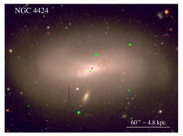
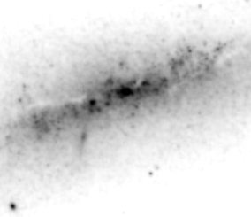
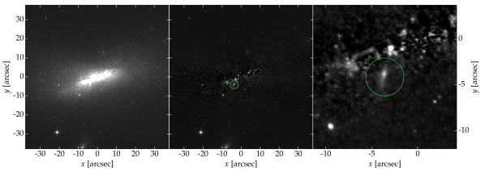
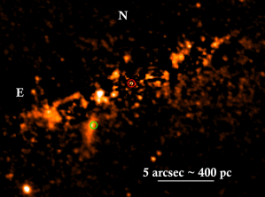

إمكان بذر مجرة NGC 4424 الحلزونية بثقب أسود عبر عنقود نجمي هابط
الملخص
يمكن أن تنمو المجرات بفعل تجاذبها الثقالي المتبادل ثم التحامها. وأثناء دوران مجرة منخفضة الكتلة حول مجرة عادية ذات سطوع سطحي عال، يمكن أن تتجرد المجرة الصغيرة من معظم جسمها. غير أن قلبها النجمي، إذا كان ممثلا بعنقود نجمي نووي محكم الارتباط، يكون أكثر قدرة على مقاومة التفكك. ومن صور أرشيفية لتلسكوب الفضاء Hubble اكتشفنا عنقودا نجميا أحمر ممدودا بفعل المد والجزر يقع على بعد 5 (400 pc إسقاطيا) من مركز المجرة الحلزونية بعد الاندماج NGC 4424، ويتجه نحوه. ولهذا العنقود النجمي، الذي نسميه ‘Nikhuli’، لمعان في الأشعة تحت الحمراء القريبة قدره L⊙,F160W، ومن المرجح أنه يمثل نواة مجرة مأسورة/مندمجة. كذلك تُظهر صورتنا من مرصد Chandra للأشعة السينية أن Nikhuli يحتوي على مصدر نقطي عالي الطاقة في الأشعة السينية، بلمعان erg s-1 (بمستوى ثقة 90%). ونرى أن هذا المصدر أقرب إلى أن يكون ثقبا أسود ضخما نشطا منه إلى ثنائي أشعة سينية. وبما أن البنية النجمية في Nikhuli لا تُظهر مظهرا مذنبيا متجها إلى الخارج، فإنها ترجح سيناريو السقوط الداخلي لا سيناريو القذف الناتج من ارتداد موجات ثقالية. وقد يكون اندماج صغير مع مجرة مبكرة النمط منخفضة الكتلة قد بذر ثقبا أسود ضخما، وأسهم في تكوين انتفاخ كاذب على شكل X، ويعمل على بناء انتفاخ صغير. وتتنبأ الكتلة النجمية وتشتت السرعات في NGC 4424 بثقب أسود مركزي كتلته (0.6–1.0)، وهي مشابهة لكتلة الثقب الأسود متوسط الكتلة المتوقعة في Nikhuli، مما يوحي بآلية لإمداد المجرات المتأخرة عديمة الانتفاخات بالثقوب السوداء. وقد نكون نشاهد فعليا عملية بذر ثقب أسود عبر الأسر والهبوط، حيث يكون العنقود النجمي النووي هو وسيلة الإيصال.
1 مقدمة
من المعروف منذ زمن بعيد أن المجرات يمكن أن تندمج. فالمجرات الأصغر تهطل على المجرات الأكبر، فتغذي نموها (Lindblad, 1927; Spitzer and Baade, 1951; Baade and Minkowski, 1954; Vorontsov-Vel’Yaminov, 1959; Ibata et al., 2019b). هذا وقد أصبح هذا النمط التطوري ركنا أساسيا في نموذج المادة المظلمة الباردة. ولا يزال اكتشاف السواتل الهابطة يختبر سيناريو النمو الهرمي للمجرات ويدعمه. كما أن التزايد السريع في اكتشاف تيارات حطام ممدودة ذات سطوع سطحي منخفض، تعود إلى مجرات سابقة في أطراف مجرات أكبر، (Putman et al., 1998; Belokurov et al., 2006; Martin et al., 2014; Drlica-Wagner et al., 2015; Koposov et al., 2015; Shipp et al., 2018; Martinez-Delgado et al., 2021) بدأ يكشف مدى تحقق النموذج الهرمي، ولا سيما في بناء الهالات النجمية. وأقرب تيار مدّي معروف إلى مركز مجرتنا يبعد 10-20 kpc عن مركز المجرة (Yuan et al., 2020; Malhan et al., 2021).
أما العناقيد النجمية النووية الكثيفة والمندمجة، وهي سمات شائعة في مراكز المجرات ذات الكتل النجمية المنخفضة (107–10) والمتوسطة (–) (مثلاً Sandage et al., 1985; Böker et al., 2002; Graham and Guzmán, 2003; Balcells et al., 2003, 2007; Scott and Graham, 2013; Sánchez-Janssen et al., 2019)، فهي أقوى ارتباطا ثقاليا من مجراتها المضيفة، ولذلك أقدر على مقاومة التفكك أثناء عملية الافتراس المجري (مثلاً، Bekki et al., 2001, 2003). والحق أن وجود نوى مزدوجة ومتعددة في المجرات الضخمة المبكرة النمط شاهد على متانة هذه العناقيد النجمية المأسورة خلال عملية استيعاب المجرات (مثلاً، Jenner, 1974; Petrosian et al., 1978; Koroviakovskii et al., 1981; Tonry, 1985; Blakeslee and Tonry, 1992; Bonfini and Graham, 2016). كما أن وفرة النوى المتميزة حركيا والأقراص النجمية النووية في المجرات المبكرة النمط (مثلاً Franx et al., 1989; Forbes et al., 1995; Graham et al., 1998; Hau et al., 1999) تكشف مسارا أكثر اكتمالا نحو مراكز هذه المجرات، في مقابل البقاء الأبدي في الهالة.
قد يكون هذا النمط من نمو المجرات، الذي تكشفه النوى المزاحة عن المركز، أصعب رصدا في المجرات المتأخرة النمط بسبب الالتباس مع عقد تشكل النجوم. ويجعل هذا الالتباس إثبات المراحل المتأخرة من عملية الاندماج/الهضم أكثر صعوبة في المجرات المتأخرة النمط. وعلاوة على ذلك، ومن دون انتفاخ نجمي ضخم، يكون الاحتكاك الديناميكي أضعف في المناطق الداخلية، مما يحد من مقدار مساهمة الاندماجات الصغرى في بناء النوى والانتفاخات. وقد استُخدمت لاحقا وفرة النسب المنخفضة بين كتلة الانتفاخ والكتلة النجمية الكلية في المجرات المتأخرة النمط، كما حددها Graham and Worley (2008) و Weinzirl et al. (2009)، من قبل Kormendy et al. (2010) للطعن في النمو الهرمي لمعظم المجرات المتأخرة النمط. فقد طُرح أن الانتفاخات أصغر من أن تكون قد بُنيت بالاندماجات، ومن ثم عُدت نتاجا لعمليات داخلية علمانية. وسيكشف رصد عنقود نجمي نووي هابط قرب مركز مجرة حلزونية متأخرة النمط أن تدمير فص Roche لجيران المجرات لا ينتج فقط تيارات تبني هالات منتشرة، بل إن التمزيق المدي يسهم أيضا في جسم المجرة نفسه، بما في ذلك الانتفاخات الصغيرة. وقد تؤدي عملية الهضم هذه كذلك إلى بذر المجرات الحلزونية بثقوب سوداء ضخمة وتغذيتها بها.
ومن بين المجرات الحلزونية في عنقود Virgo، تبرز المجرة المصنفة ‘Sa? pec’ (Sandage and Tammann, 1981)، NGC 4424 (VCC 979)، ذات قرص مائل بمقدار 70 عن وضعية المواجهة، بوصفها حالة ذات أهمية خاصة. ففي حين لا يوجد مصدر نقطي قابل للكشف في الأشعة السينية عند مركز NGC 4424، يوجد بالقرب منه (5) مصدر غير مركزي هو NGC 4424 X-3 ( erg s-1). وقد أبلغ عنه Boselli et al. (2018) علنا لأول مرة، واقترحوا أنه إما ثنائي أشعة سينية (XRB) وإما نواة مجرة اندمجت. وتوجد في أطراف هذه المجرة أيضا مصدران نقطيان أسطع في الأشعة السينية ومصدر رابع أخفت.
وعلى الرغم من أن Feng and Soria (2011) وBachetti et al. (2014) وKaaret et al. (2017) يبينون لماذا يُعتقد أن التراكم فوق حد Eddington (Alexander and Natarajan, 2014; Soria et al., 2014) يفسر كثيرا من مصادر الأشعة السينية فائقة اللمعان غير المركزية (ULX: من إلى erg s-1)، فإن بعضها قد يكون ثقوبا سوداء متوسطة الكتلة (IMBHs) قادمة من مجرات متراكمة، ولا سيما مصادر الأشعة السينية فائقة اللمعان (HLXs: erg s-1, Gao et al., 2003) مثل ESO 243-49 (Farrell et al., 2009; Soria et al., 2010) وغيرها (Sutton et al., 2012; Barrows et al., 2019; Earnshaw et al., 2019). وهنا نعرض ارتباط NGC 4424 X-3 بعنقود نجمي أحمر ممدود.
في القسم 2، نقدم معلومات خلفية وإحالات عن NGC 4424 قبل عرض الصور البصرية والقريبة من الأشعة تحت الحمراء مع خريطة الأشعة السينية. ثم نعيد تحليل صورة تلسكوب الفضاء Hubble (HST)، وبيانات مرصد Chandra للأشعة السينية (CXO)، وبيانات XMM-Newton، ونقدم مناقشة موسعة. ويعرض القسم 3 تنبؤا بكتلة الثقب الأسود المركزي في كل من NGC 4424 والجسم الهابط المشتبه به. وأخيرا، تقدم في القسم 5 مناقشة أكثر تفصيلا تتمحور حول المصادر غير المركزية.
في عمل سابق، Graham et al. (2019)، استخدمنا متوسط معامل المسافة المستقل عن الانزياح الأحمر لـ NGC 4424، وهو 30.61.0، من قاعدة بيانات NASA/IPAC خارج المجرية (NED)11 1 http://nedwww.ipac.caltech.edu. أما هنا فنعتمد معامل المسافة القائم على Cepheid 31.0800.292 (مسافة اللمعان Mpc) من Riess et al. (2016)، مما يعطي مقياسا قدره 79 pc arcsec. ويتضمن هذا القيمة ويتفق مع مجموعة من النتائج الحديثة، منها Hatt et al. (2018) الذين يوردون معامل مسافة ‘قمة فرع العمالقة الحمر’ ( Mpc)، وكذلك Munari et al. (2013) الذين اشتقوا معامل مسافة SN Ia قدره 30.95، وCortés et al. (2008) الذين أوردوا القيمة 30.91 استنادا إلى علاقة Tully and Fisher (1977).
2 الملاحظات والنتائج
2.1 مقدمة
استنادا إلى تعريضات CXO العميقة لـ 100 مجرة مبكرة النمط في عنقود Virgo، يمتلك نصفها عنقودا نجميا نوويا (Côté et al., 2006; Ferrarese et al., 2006)—Gallo et al. (2010) يتضح عمليا أن العناقيد النجمية النووية، في حد ذاتها، لا تميل إلى احتواء مصادر نقطية في الأشعة السينية. ومن بين المجرات 30 الأقل كتلة في تلك العينة المكونة من 100 مجرة، فإن معظمها منوّى، وقد تُنبئ بأن جميعها تؤوي ثقبا أسود متوسط الكتلة (IMBH). وذكر Graham and Soria (2019) أن ثلاثا فقط من هذه المجرات 30 تضم مصدرا نقطيا مركزيا في الأشعة السينية، وهو ما يستبعد أن تكون ثنائيات الأشعة السينية ذات الكتلة النجمية سمة عامة للعناقيد النجمية النووية، على الأقل في المجرات المبكرة النمط. وإذا كانت هذه العناقيد تتألف من جمهرة نجمية فتية وأخرى قديمة، فإن ذلك يستبعد ثنائيات الأشعة السينية العالية الكتلة والمنخفضة الكتلة، على التوالي.
من الرصد السابق، عُرفت NGC 4424 (الشكل 1) بأنها مجرة بعد اندماج تشهد تشكلا نجميا مركزيا (Kenney et al., 1996). Cortés et al. (2006) وBoselli et al. (2018) تحليلا مفصلا لـ NGC 4424، ووجدا أنها شهدت حدث اندماج غير متكافئ الكتلة قبل أقل من 0.5 Gyr. وقد غذى اللقاء اندفاعا من الغاز المتأين، يظهر على هيئة عمود بطول 10 kpc يشير في الاتجاه المعاكس لذيل من غاز HI منزوع بضغط الصدم، طوله 110 kpc، ينبعث من NGC 4424 أثناء اندفاعها عبر الوسط الحار داخل عنقود Virgo.



2.2 الصور البصرية/القريبة من الأشعة تحت الحمراء
من الشكل 1، الملتقط ضمن مسح عنقود Virgo للجيل التالي (NGVS: Ferrarese et al., 2012)، تبدو NGC 4424 مجرة عديمة الانتفاخ، أو شبه عديمة الانتفاخ، وفيها بنية عقدية شبيهة بالقضيب ذات إهليلجية أكبر من أن تمثل انتفاخا مسترخيا. وعلى الرغم من أن de Vaucouleurs et al. (1991) يصنفون هذه المجرة على أنها ذات أذرع حلزونية وقضيب، فإن هذه البنية الشبيهة بالقضيب لا تشبه قضيبا نموذجيا مسترخيا. وبدلا من ذلك، فإنها تعرض بنية ظاهرة على شكل X/(قشرة الفول السوداني) (X/P)، أي انتفاخا كاذبا تكون من انبعاج قضيب (Bardeen, 1975; Hohl, 1975; Combes and Sanders, 1981; Combes et al., 1990; Athanassoula, 2005; Saha et al., 2018). وتنبثق الأذرع الحلزونية العريضة الخافتة من نهايتي البنية الشبيهة بالقضيب ذات الشكل X، عند نصف قطر على المحور الرئيسي قدره 36.
وعند تكبير المنطقة المركزية وخفض السطوع، يعرض الشكل 2 جزءا من صورة مأخوذة من Hubble Legacy Archive (HLA)22 2 https://hla.stsci.edu/. وتُظهر الصورة المنطقة الداخلية من قناة الأشعة تحت الحمراء في كاميرا Wide Field Camera 3 (WFC3) ضمن مرشح F160W (نطاق )، والمأخوذة ضمن مقترح HST ذي المعرف 12880 (PI: A.Riess). يساعد التعريض في الأشعة تحت الحمراء القريبة على تقليل أثر الغبار والنجوم الشابة وتجنب انبعاث H. ويمكن رؤية تيار ذي نواة إلى أسفل يسار مركز المجرة، أي إلى الجنوب الشرقي منه.
يعرض الشكل 3 نمذجتنا وإزالتنا لجزء كبير من ضوء المجرة المتناظر مرآتيا حول محورها الرئيسي (مع زاوية موضع تتغير باختلاف نصف القطر). واتبعت عملية اختزال البيانات لدينا الإجراء المفصل في Davis et al. (2019). نمذجنا NGC 4424 باستخدام المهمة المعدلة Isofit (Ciambur, 2015)، المشغلة ضمن حزمة Image Reduction and Analysis Facility (IRAF)33 3 http://ast.noao.edu/data/software المسماة ellipse. ويتكون نموذجنا من سلسلة من المقاطع أحادية البعد تشمل التغير الشعاعي في الشدة، وزاوية موضع المحور الرئيسي، والإهليلجية، وتتابعا من حدود فورييه التوافقية ذات الرتب العليا التي تلتقط انحرافات الأيزوفوتات عن الإهليلجات الصرفة.
نموذج المجرة ثنائي الأبعاد لدينا — المبني من المقاطع أحادية البعد المتنوعة باستخدام المهمة الجديدة Cmodel (Ciambur, 2015) داخل IRAF — طُرح من الصورة الأصلية لإبراز بنية البواقي (الشكل 3). ويكشف ذلك بوضوح أكبر العنقود النجمي الممدود غير المركزي 5 (400 pc) جنوب شرق مركز المجرة. وقد اكتشفنا لاحقا أن هذه البنية التي أُغفلت سابقا مرئية أيضا في صورة F160W/F814W/F555W المركبة التي صنعتها Lisa Frattare، والمتاحة على موقع NASA 44 4 https://www.nasa.gov/image-feature/goddard/2017/hubbles-double-galaxy-gaze-leda-and-ngc-4424 وفي Graur et al. (2016, الشكل 1 في عملهم). علاوة على ذلك، فإن هذا العنقود النجمي هو أيضًا المكان الذي يوجد فيه مصدر الأشعة السينية البعيد عن المركز (الشكل 1، انظر أيضًا Boselli et al., 2018). هذا الاكتشاف، أو الإدراك، يذكرنا باكتشاف النظير البصري/المضيف لـ HLX-1 في المجرة ESO 243-49 (Soria et al., 2010)، وهو ما يمكن رؤيته بوضوح في الشكل 7 ل (Ciambur, 2015).
تحتوي NGC 4424 على قرص أسي واسع النطاق ومعروف (Kenney et al., 1996; Cortés et al., 2006). وضمن هذا القرص يوجد قضيب خافت طويل شهد نصفه الداخلي ازدياد سطوع مرتبطا ببنية X/P الصندوقية أو بالانتفاخ الكاذب. ويعكس الحد السالب عند 12 ثانية قوسية (الشكل 4) الأيزوفوتات الصندوقية لبنية القضيب/الانتفاخ الكاذب، وكذلك الحد الموجب . وبالنظر إلى الطبيعة غير المسترخية للنظام، فقد يكون هذا الانتفاخ ما يزال في طور النمو. وعند أنصاف الأقطار الصغيرة ()، تمنح العقد الممتدة على المحور الرئيسي الأيزوفوتات مظهرا مضطربا. وقد التقط النموذج جزءا من ذلك، كما تدل القمم في مقاطع توافقيات فورييه من الرتبتين الرابعة والسادسة (الشكل 4)، في حين بقي معظمه في صورة البواقي. كما يظهر مقطع الضوء في الشكل 4 ارتفاعا بارزا داخل الثانية القوسية الداخلية. وقد لا يكون مصدر هذا الارتفاع عنقودا نجميا نوويا مفردا، بل يبدو أنه يعكس الحالة غير المستقرة في مركز المجرة، حيث تُرى عدة عقد.
العنقود النجمي الممدود بعض الشيء في NGC 4424، الذي سنسميه ‘Nikhuli’ (انظر القسم 3.2)، ممتد في اتجاه مركز المجرة. ومن صورة بواقي WFC3/IR F160W (المجرة مطروحا منها النموذج)، نقيس لهذا المصدر الممدود فيضا قدره إلكترون في الثانية. وباستخدام نقطة صفر WFC3/IR F160W55 5 ظلت حساسية كاشف WFC3/IR مستقرة بصورة ملحوظة خلال العقد الماضي (Kozhurina-Platais and Baggett, 2020)، وتتيح دقة/قابلية تكرار فوتومترية مقدارها 1، أي 1.5% (0.015 mag) (Bajaj, 2019). قدرها 25.946 mag (النظام الفوتومتري AB: Koekemoer et al., 2013)، يقابل ذلك قدرا ظاهريا 18.590.04 mag (AB). ويعطي استخدام معامل المسافة 31.080.29 قدرا مطلقا 12.490.29 mag. ومع القدر المطلق للشمس في F160W، وهو 4.60 mag (قدر AB: Willmer, 2018)، يكون اللمعان النجمي L⊙,F160W. وبافتراض نسبة كتلة نجمية إلى ضوء في F160W مقدارها 0.5 (Graham and Spitler, 2009, انظر الشكل A1 في عملهم)، تكون الكتلة النجمية . أما الانطفاء المجري عند 1.6 m في اتجاه NGC 4424 فلا يتجاوز 0.01 mag (Schlafly and Finkbeiner, 2011). ومن الصورة الملونة المركبة ذات النطاقات 3 في Graur et al. (2016)، يبدو أيضا أن الغبار الداخلي في NGC 4424 لا يمثل مشكلة مهمة عند موقع Nikhuli.
2.2.1 لون
وبما أن Nikhuli مرئي أيضا في صورة F814W، فإن ذلك يستبعد احتمال أن يكون الكشف في صورة F160W ناتجا فقط من انبعاث خط Fe II 1.64 m من فقاعة متأينة حول NGC 4424 X-3. كما أن التشكل الممدود لا يدعم هذا التفسير. واستخدمنا تمهيدا غاوسيا لخفض الدقة المكانية لصورة قناة WFC3 UVIS F814W، التي أُخذت ضمن مقترح HST نفسه (ID 12880. PI: A.Riess) مثل صورة F160W، كي تطابق الرؤية في صورة F160W. أما ضوء (المجرة مع العنقود النجمي) داخل إهليلج 34 (272 pc) في 15 (120 pc) متمركز على العنقود النجمي، فله لون متوسط F814WF160W قدره 1.600.10 mag. وهذا اللون أشد احمرارا قليلا من لون المجرة المحيط، البالغ 1.440.04 mag، وقد يشير إلى جمهرة نجمية أقدم. وليس ذلك أمرا غير مألوف؛ فالعنقود النجمي في التابع الكروي القزم لمجرة درب التبانة Eridanus II يُعتقد أيضا أنه قديم (Alzate et al., 2021).
ولأن لون ضوء المجرة يمكن أن يطغى على لون ضوء العنقود النجمي، فإن صورة لون المجرة (مع العنقود النجمي) F814WF160W ليست مثلى لإظهار لون Nikhuli. لذلك حاولنا تقديم صورة بواقي لونية بدلا من صورة لونية للمجرة. ولتحقيق ذلك طرحنا صورة بواقي F160W من صورة بواقي F814W. وبحكم التصميم تكون شدة معظم البكسلات قريبة من الصفر في صور البواقي هذه. ومن ثم يكون متوسط «اللون» في صورة البواقي اللونية قريبا من الصفر، لا مساويا للون المجرة. كذلك فإن نحو نصف البكسلات في صور بواقي F814W وF160W لها شدة سالبة، ولا سيما حيث يوجد حجب بالغبار. وقد يمثل ذلك إشكالا لأن اللون التقليدي، المعطى بنسبة الشدات ، لا يكون معرفا عندما تكون سالبة، كما تصبح الصورة اللونية ضجيجية عندما تكون أي من أو قريبة من الصفر. وللتخفيف من ذلك، أضفنا في صور البواقي شدة بكسل قدرها 1 إلى البكسلات ذات الشدة الموجبة، وطرحنا شدة بكسل قدرها 1 من البكسلات ذات الشدة السالبة. ثم حسبنا، لكل واحدة من صور البواقي المعدلة هذه، مقادير زائفة للبكسلات ذات قيم الموجبة، و للبكسلات ذات قيم السالبة. واستخدمنا بعد ذلك magmag2 وكيلا للون كل بكسل. وبسبب عمليات تدوير الصورة ومحاذاتها ومطابقة حجم البكسلات ومطابقة الرؤية، فضلا عن إضافة «مستوى الانحياز» إلى الشدة، فإن صورتنا الزائفة اللون لبنية البواقي ليست مثالية، لكنها تبقى مفيدة.
ينشأ الشريط البارز في صورة البواقي الزائفة اللون (الشكل 5) من فجوة شريحة كاشف WFC3 UVIS، البالغ عرضها 124، في صورة F814W. أما النمط الأصفر المروحي ثلاثي الشعب فيعود إلى أن Isofit نجح بدرجة أكبر في التقاط هذه البنية المجرية الحقيقية وإزالتها من صورة F160W مقارنة بصورة F814W. ومع أن جزءا كبيرا من اللون الأزرق داخل المنطقة شبه الإهليلجية الملاءمة هو ضجيج ناتج من صفر ناقص صفر، فإن الصورة تكشف الشدة النسبية لضوء F160W إلى F814W في عدة سمات عبر الحقل. ويمكن ملاحظة أن ضوء Nikhuli (المرتبط بالانبعاث في الشكل 3) له نسبة شدة مرتفعة نسبيا بين F160W وF814W. كما يمكن ملاحظة أن حارة الغبار، المرتبطة بالحجب في الشكل 3 والمعروفة بوصفها سمة مدروسة في بعض قضبان المجرات الحلزونية (مثلاً، Athanassoula, 1992)، تظهر حمراء أيضا. وفي المقابل، فإن منطقة داخلية من القرص بمقاس 32 (260 pc)، مباشرة إلى الشرق من مركز المجرة، تبدو نسبة شدة F160W إلى F814W منخفضة نسبيا. وهذا يدل على تشكل نجمي حديث/جار. ومع ذلك، فإن الألوان الظاهرة في الشكل 5 ليست مثالية. ومن معوقات الحصول على صورة بواقي لونية أكثر فائدة كميا الافتقار الظاهر إلى البنية في صورة F814W مقارنة بصورة F160W، وهو ما يميل إلى تضخيم الإشارة الآتية من السمات في صورة F160W. إضافة إلى ذلك، لُوئم نموذج مجري مستقل لكل من صورتي F160W وF814W، ومن ثم طُرحت نماذج مختلفة قليلا من كل صورة، مما أثر في بناء الصورة اللونية.

2.3 بيانات الأشعة السينية
2.3.1 بيانات مرصد الأشعة السينية Chandra
باستخدام تعريض CXO بطول 14.87 ks بمطياف التصوير CCD المتقدم (ACIS) (ObsID: 19408. PI: Soria) أُخذ في 2017-04-17، أفاد Boselli et al. (2018, انظر الأقسام 4.2 في عملهم) بوجود مصدر الأشعة السينية المحجوب NGC 4424 X-3، الواقع على بعد 49 (390 pc) جنوب شرق النواة. يتيح CXO تحديد مواضع المصادر الخافتة الشبيهة بالنقط بدقة دون ثانية قوسية، ويتطابق NGC 4424 X-3 مع العنقود النجمي.66 6 حُسنت محاذاة CXO/HST بمساعدة مصدر CXO النقطي المرتبط بنواة المجرة الخلفية عند R.A.=12:27:12.16، decl.=+9:24:35.55، وبمساعدة كوازار عند R.A.=12:27:12.85، decl.=+9:24:13.13. يُظهر الشكل 6 المصدر النقطي في الأشعة السينية عند R.A.=12:27:11.801، decl.=+9:25:10.71، وتشير دائرة حمراء إلى 90% نصف القطر = 03.
أعدنا تحليل بيانات CXO باتباع الوصفة المفصلة الواردة في Graham et al. (2021) وSoria et al. (2021). وباختصار، استخدمنا حزمة برمجيات Chandra Interactive Analysis of Observations (ciao) الإصدار 4.12 (Fruscione et al., 2006) مع قاعدة بيانات المعايرة الإصدار 4.9.1، لإعادة معالجة ملفات الأحداث (مهمة ciao المسماة chandra_repro)، وحزمة العرض ds9 (Joye and Mandel, 2003) لمعالجة الصور وتحديد المراكز واختيار مناطق المصدر والخلفية. يقع NGC 4424 X-3 قرب نقطة تصويب ACIS، مما يجعل دالة انتشار النقطة أحدّ ويخفض عدم اليقين الموضعي في المركز حتى مع قلة عدد الفوتونات. ولاستغلال ذلك، استخرجنا أيضا صورا بدقة دون بكسلية (0.5 بكسل، بما يقابل 025)، باستخدام dmcopy، واستعملنا صورة ذات دقة دون بكسلية في نطاق 0.3–7 keV لتحديد المركز.
استخدمنا نصف قطر لاستخراج المصدر قدره 15 (3 بكسل) حول مركز المصدر؛ والطاقة المطوقة المتوقعة داخل هذا النصف قطر هي 95%. أما الخلفية فاستخدمنا لها الحلقة الواقعة بين 25 و10. ويوجد 8 عدّ أشعة سينية داخل منطقة المصدر (بل كلها داخل 10 من موضع المركز) في نطاق 0.3–7 keV: لا عدّ في النطاق اللين (0.3–1 keV)، و1 في النطاق المتوسط (1–2 keV)، و7 في النطاق الصلب (2–7 keV). وعند تقسيم نطاق الطاقة بطريقة أخرى نرى أن جميع العدّات 8 تقع عند 1.5 keV. وعلى الرغم من قلة عدد العدّات، فإن الكشف عالي الدلالة لأن الخلفية شديدة الانخفاض؛ فاستنادا إلى المتوسط المحلي لا نتوقع سوى 0.1 عدّ خلفية في النطاق اللين داخل منطقة المصدر، و0.2 عدّ خلفية في النطاق المتوسط، و0.1 عدّ خلفية في النطاق الصلب. وبالنسبة إلى عدّات مرصودة و0.4 عدّ خلفية متوقعا في زمن تكامل قدره 14.87 ks، يكون فاصل الثقة Bayesian عند 90% هو 4–13 عدّا صافيا، وفاصل 99% هو 2–17 عدّا صافيا (Kraft et al., 1991). ومعدل العد الصافي في نطاق 0.3–7 keV (بما في ذلك تصحيح PSF إلى نصف قطر لا نهائي) هو ct s-1 (فاصل ثقة Bayesian قدره 90%).
حاولنا استنتاج معلومات إضافية عن فيض ولمعان X-3 بطريقتين مختلفتين: من طاقة الفوتونات المرصودة (باستخدام مهمة srcflux في CIAO)، ومن ملاءمة نموذج طيفي (باستخدام حزمة xspec (Arnaud, 1996) الإصدار 12.11.0). أولا طبقنا مهمة srcflux على ملف الأحداث المعاد معالجته للحصول على تقدير مستقل عن النموذج للفيض المرصود، المخفوت بفعل غاز H I77 7 يعتمد فيض srcflux المستقل عن النموذج على معدل الفوتونات المرصودة وطاقاتها المقاسة مباشرة، مع أخذ الكفاءة الكمية والمساحة الفعالة داخل منطقة المصدر في الحسبان. أما الفيض المعتمد على النموذج فهو فيض أفضل نموذج ملائم لتوزيع الفوتونات المرصود. وهما تقريبان بديلان للفيض المرصود ‘الحقيقي’ (الممتص). استخدمنا srcflux لحساب الفيض المستقل عن النموذج، وxspec لتحديد الفيض المعتمد على النموذج. ومن فيض xspec المعتمد على النموذج حسبنا بعد ذلك الفيض غير الممتص، ومنه قدرنا اللمعان المنبعث. في نطاق ACIS ‘العريض’ (0.5–7 keV). ثانيا، وعلى الرغم من صغر عدد العدّات، استخرجنا طيفا وملفات الاستجابة والاستجابة المساعدة المرتبطة به باستخدام specextract (الشكل 7). وأعدنا تجميع الطيف إلى 1 عدّ في كل حاوية، ثم لاءمناه بنماذج بسيطة (قانون قدرة وقرص-جسم أسود) باستخدام xspec. واستخدمنا إحصائية (Cash, 1979) للملاءمة (cstat في xspec).
لم يكن الغرض الرئيس من تحليلنا الطيفي بالطبع هو تحديد نموذج ملاءمة معقد، بل تقدير كثافة العمود الجوهرية واللمعان المصحح من الامتصاص المتوافقين مع توزيع الطاقة الغريب للفوتونات القليلة المرصودة (كلها أعلى من 1.5 keV). وبافتراض نموذج قانون قدرة، وهو الخيار الأبسط عند غياب معلومات إضافية، مع مؤشر فوتوني (وهو اختيار معياري مرجعي للانبعاث الصلب من الأجسام المدمجة المتراكمة، مثلا Molina et al., 2009; Corral et al., 2011; Younes et al., 2011; Plotkin et al., 2013; Yang et al., 2015)، نقدر أن عمود امتصاص جوهريا cm-2 (أعلى بكثير من كثافة عمود خط البصر المجري cm-2؛ (HI4PI Collaboration et al., 2016)) مطلوب لتفسير توزيع طاقات الفوتونات المرصودة (الجدول 1). ويتطلب نموذج قرص-جسم أسود بدرجة حرارة مفترضة 1.0 keV امتصاصا عاليا مماثلا. ويتيح هذا التقدير التقريبي للامتصاص الجوهري تحويل معدل العد والفيض إلى لمعان جوهري بصورة أكثر واقعية. وبالنسبة إلى نموذج قانون القدرة المفترض88 8 ميل قانون القدرة، أو مؤشر الفوتونات، ، يقارب 1.7 لنسب Eddington – (مثلاً Molina et al., 2009; Corral et al., 2011; Younes et al., 2011; Plotkin et al., 2013; Yang et al., 2015). أما عند نسب Eddington أصغر من فيزداد انحدار إلى نحو 2.1، وعند نسب Eddington أكبر من يزداد انحدار إلى نحو 2.5. 99 9 مع ، نحصل على ، و . بصورة مماثلة، ، و .، يكون اللمعان غير الممتص في نطاق 0.3–10 keV هو erg s-1. أما في نموذج قرص-جسم أسود فيكون erg s-1 (الجدول 1). وللتحقق من هذه النتائج بصورة إضافية، أدخلنا معدلات العد الصافية في النطاق الصلب (المستنتجة سابقا باستخدام srcflux) في نسخة ciao من Portable, Interactive Multi-Mission Simulator (pimms) الإصدار 4.11a1010 10 https://cxc.harvard.edu/toolkit/pimms.jsp، مع دوال الاستجابة لدورة Chandra 18، فحصلنا على التقديرات نفسها للفيض الجوهري (الموافق للمَعان مستقرئ في 0.3–10 keV يبلغ نحو erg s-1 للميول الطيفية المعقولة)، وعلى القيم العالية نفسها cm-2 اللازمة لإزالة جميع الفوتونات دون 1.5 keV. وتُعرض صورة CXO في الشكل 1.
لا تكفي لدينا العدّات ولا تغطية عرض النطاق للتمييز بين نموذج قانون قدرة ونموذج منحني (مثل قرص-جسم أسود)، حتى مع إحصاءات Cash. ونموذج قانون القدرة هو الشكل الطيفي المتوقع لثقب أسود متوسط الكتلة، إذ يكون في الحالة المنخفضة/الصلبة عند لمعان 1039 erg s-1 (10-3 من لمعان Eddington لثقب أسود كتلته ). غير أن لمعانا قدره 1039 erg s-1 يتفق أيضا مع ثقب أسود ذي كتلة نجمية عند الطرف الأعلى من الحالة العالية/اللينة، بدرجة حرارة نموذجية 1 keV ونصف قطر قرص داخلي 50–100 km.
| Model Parameters | Values |
|---|---|
| Model-independent 0.5–7 keV flux from srcflux | |
| Net Rate ( ct s-1) | |
| ( erg cm-2 s-1) | |
| phabs phabs power-law | |
| ( cm-2) | [0.015] |
| ( cm-2) | |
| [1.7] | |
| ( photons keV-1 cm-2 s-1 at 1 keV) | |
| C-stat/dof | |
| ( erg cm-2 s-1)a | |
| ( erg s-1)b | |
| phabs phabs diskbb | |
| ( cm-2) | [0.015] |
| ( cm-2) | |
| (keV) | [1.0] |
| ( km2)c | |
| (km)d | |
| C-stat/dof | |
| ( erg cm-2 s-1)a | |
| ( erg s-1)b | |
ملحوظات. تمثل مجالات الخطأ حدود ثقة 90% لمعلمة 1 واحدة مهمة. وثُبتت القيم بين قوسين في الملاءمة.
a فيض النموذج الممتص في نطاق 0.5–7 keV.
b اللمعان المتساوي الخواص المصحح من الامتصاص في نطاق 0.3–10 keV، ويُعرّف بأنه مرة فيض النموذج المصحح من الامتصاص في نطاق 0.3–10 keV.
c ، حيث هو نصف قطر القرص الداخلي الظاهري بالكيلومترات، و هي المسافة إلى المصدر بوحدات 10 kpc (وهنا )، و هي زاوية الرؤية لدينا ( تعني المواجهة).
d للقرص القياسي (Kubota et al., 1998).
2.3.2 بيانات XMM-Newton
رُصد الحقل المحيط بـ NGC 4424 X-3 أيضا بكاميرا التصوير الفوتوني الأوروبية - شبه موصل أكسيد الفلز (EPIC-MOS) على متن XMM-Newton في مناسبتين: في 2010 يونيو 13 (Obs.ID: 0651790101؛ Revolution: 1925) وفي 2017 ديسمبر 5 (Obs.ID: 0802580201؛ Revolution: 3295)، انظر Boselli et al. (2018, الشكل 5 في عملهم). حمّلنا البيانات من أرشيف HEASARC وأعدنا معالجتها ببرنامج Science Analysis Software (sas) (الإصدار 17.0.0: Gabriel et al., 2004). وأعدنا بناء ملفات الأحداث لكاميرات pn وMOS باستخدام epproc وemproc، على التوالي. ورشحنا ملفات الأحداث لإزالة فترات الخلفية الجسيمية العالية أو المتوهجة بسرعة؛ فاخترنا فقط الفترات التي تحقق فيها معلمة الخلفية RATE الشرط 0.35 في MOS1 وMOS2، و0.5 في pn، عند القنوات 10000 PI 12000. وبعد هذه الخطوة كان الفاصل الزمني الجيد لـ Obs.ID 0651790101 في منطقة استخراج المصدر 13.8 ks لكاميرا pn، و20.6 ks لكل من كاميرتي MOS؛ أما في Obs.ID 0802580201 فكان زمن التعرض الفعلي 11.1 ks لكاميرا pn و18.9 ks لكاميرتي MOS. ثم رشحنا ملفات الأحداث بالشروط القياسية “(FLAG0) && (PATTERN4)” للكاميرا pn، و“(#XMMEA_EM && (PATTERN12)” لكاميرات MOS (الموافقة للأحداث المفردة والمزدوجة).
حددنا منطقة مصدر دائرية نصف قطرها 15؛ وهذا أصغر قليلا من المعتاد لمصادر EPIC النقطية، لكننا أردنا تقليل تلوث المصدر النقطي الخافت بالانبعاث المنتشر المحيط، المتوقع من الغاز الساخن في المنطقة المركزية لهذه المجرة المكونة للنجوم. (وهذا ليس إشكالا في Chandra، بفضل دقته المكانية الأعلى بكثير). وحددنا مناطق خلفية محلية أكبر بسبع مرات من منطقة المصدر. واستخدمنا xmmselect، لكل من الرصدين، لاستخراج أطياف منفردة للكاميرا pn وكاميرات MOS؛ وبنينا ملفات الاستجابة والاستجابة المساعدة المقابلة باستخدام rmfgen وarfgen. وأخيرا جمعنا أطياف pn وMOS لكل رصد باستخدام epicspeccombine. وجمعنا طيفي EPIC الناتجين إلى حد أدنى قدره 1 عدّ في كل حاوية، ولاءمناهما باستخدام xspec (Arnaud, 1996) الإصدار 12.11.0، مع إحصاءات Cash (Cash, 1979). واخترنا إحصاءات Cash لأن الأطياف المجمعة لا تتضمن عدّات كافية لملاءمة ذات معنى: فنقدر 190 عدّا صافيا في طيف EPIC من Obs.ID 0651790101، و120 عدّا صافيا من Obs.ID 0802580201.
يلائم كلا الطيفين جيدا انبعاث بلازما حرارية، يهيمن دون 1 keV، ومركبة قانون قدرة، تهيمن عند الطاقات الأعلى. وبوجه خاص، تتفق المركبة اللينة مع بلازما حرارية متعددة درجات الحرارة. وعند ملاءمتها بمركبتي apec تكون درجتا الحرارة 0.2 keV و 0.7 keV. وهذا هو توزع درجات الحرارة المميز للغاز الحار المنتشر في المجرات المكونة للنجوم (Owen and Warwick, 2009; Mineo et al., 2012). لذلك نفسر مركبة قانون القدرة بوصفها الانبعاث الصادر عن الجسم المدمج المتراكم، والمركبة اللينة بوصفها تعزيزا محليا لانبعاث منتشر، أي متتبعا لتشكل نجمي حديث ربما يكون مرتبطا باندماج الساتل. ولا بد أن تُرى المركبة الحرارية اللينة عبر كثافة عمود أقل بكثير مما قُدر من ألوان كشف Chandra الصلبة.
استنادا إلى هذا التفسير المبدئي، وللحد من عدد المعلمات الحرة، ثبتنا درجتي حرارة مركبتي apec عند 0.2 keV و0.7 keV، وأضفنا كثافة عمود امتصاص جوهري إضافية قدرها cm-2، تراها مركبة قانون القدرة فقط. كما أبقينا تطبيع mekal ومؤشر فوتونات قانون القدرة مقيدين بين الحقبتين. وحصلنا على ملاءمة جيدة (إحصاء C يساوي 496.8/497) لمؤشر فوتوني . وتضاعف تقريبا اللمعان المصحح من الامتصاص في 0.3–10 keV لمركبة قانون القدرة (التي تمثل، وفق تفسيرنا النموذجي، مصدر Chandra النقطي) من 1039 erg s-1 في 2010 إلى 2.2 erg s-1 في 2017 (ولمعانا 0.5–8 keV مقدارهما 8 erg s-1 و1.8 erg s-1، على التوالي).
3 تقديرات كتلة الثقب الأسود
قد تؤوي NGC 4424 ثقبين أسودين ضخمين، ربما لم يستقر أحدهما بعد في مركز هذا النظام المندمج (Merritt and Milosavljević, 2005; Barausse, 2012; Tremmel et al., 2018)، وهو ما قد يفسر وجود NGC 4424 X-3 داخل العنقود النجمي الممدود غير المركزي. وفي هذا السيناريو يكون الثقب الأسود الضخم الثاني المفترض ساكنا ومقيما في مركز NGC 4424.
وفي ما يلي نعرض أولا الكتلة المتوقعة لمثل هذا الثقب الأسود المتمركز في المجرة، ثم نقدم تنبؤا بكتلة الثقب الأسود في العنقود النجمي Nikhuli.
3.1 NGC 4424
باستخدام معامل المسافة المنقح 31.0800.292 ( Mpc)، بدلا من 30.61.0، تصبح الكتلة النجمية الكلية المنقحة لـ NGC 4424 هي (Graham et al., 2019, انظر ملحقهم). وتستند هذه الكتلة إلى قدر المجرة في نطاق الأشعة تحت الحمراء القريبة (2.2 m) البالغ 8.86 mag من GOLD Mine1111 11 http://goldmine.mib.infn.it/ (Gavazzi et al., 2003)، مع عدم يقين مفترض قدره 0.10 mag ونسبة كتلة نجمية إلى ضوء في النطاق مقدارها للمجرة. وتشير هذه الكتلة النجمية المجرية إلى كتلة ثقب أسود مركزي قدرها (استنادا إلى تحليل Bayesian متماثل لعلاقة – في المجرات المتأخرة النمط) أو (استنادا إلى انحدار منصف متماثل للمجرات المتأخرة النمط باستخدام روتين FITEXY المعدل). انظر Davis et al. (2018) وGraham et al. (2019) للتفاصيل.
قد يكون حدث الاندماج في NGC 4424 قد رفع تشتت السرعات النجمية المركزية، المبلغ عنه بقيمة km s-1 بواسطة Ho et al. (2009). غير أن ذلك قد يكون متسقا مع الزيادة التي أحدثها الاندماج في الكتلة النجمية، إذ ينتج عنه تنبؤ متوافق بكتلة الثقب الأسود قدرها (Davis et al., 2017). ومع ذلك فقد شوّه الاندماج الماضي/الجاري النمط الحلزوني (Kenney et al., 1996; Cortés et al., 2006)، وهو ما يفسر على الأرجح التنبؤ المخالف، انظر الجدول 2، لكتلة الثقب الأسود عند استخدام زاوية التفاف الأذرع الحلزونية (16.92.4 degrees: Graham et al., 2019) وعلاقة – في Davis et al. (2017).
| () | () | () | |
|---|---|---|---|
| 4.80.8 | 6.70.5 | 5.00.8 | 4.90.6 |
تُعرض هنا كتل الثقوب السوداء المركزية المتوقعة بوحدات الكتلة الشمسية. وكما يوضح القسم 3، استُمدت هذه التنبؤات من الكتلة النجمية الكلية للمجرة، وزاوية التفاف الأذرع الحلزونية، وتشتت السرعات النجمية. غير أن زاوية الالتفاف تعد غير موثوقة للتنبؤ بكتلة الثقب الأسود في هذه المجرة بعد الاندماج، ولذلك لا تُستخدم في حساب متوسط كتلة الثقب الأسود المرجح بالخطأ، ، المعروض في العمود الأخير. وينبغي عدم الخلط بين هذه الكتل وكتلة الثقب الأسود اللوغاريتمية المتوقعة في Nikhuli، وهي (انظر نهاية القسم 3).
يمكن حساب المتوسط المرجح بالخطأ للوغاريتم كتل الثقوب السوداء المقدرة من
| (1) |
مع الترجيح بمقلوب التباين1212 12 يعطي ذلك ‘تقدير الاحتمال الأعظمي’ لمتوسط التوزيعات الاحتمالية، على افتراض أنها مستقلة وطبيعية وموزعة حول المتوسط نفسه. بحيث . ويعطى الخطأ المعياري الموافق 1 بالعلاقة
| (2) |
وبناء على الكتلة النجمية وتشتت السرعات في NGC 4424، يُتوقع أن تمتلك ثقبا أسود مركزيا متوسط الكتلة بقيمة dex. وفائدة هذا المتوسط المرجح بالخطأ أن عدم اليقين فيه أصغر من عدم اليقين القريب من رتبة قدر في كل تقدير منفرد لكتلة الثقب الأسود.
3.2 Nikhuli
يرجح أن يمثل العنقود النجمي الممدود نواة مجرة مأسورة تمر بالمراحل الأخيرة من الهضم والاندماج والاستيعاب مع NGC 4424. وبوصفه على الأرجح البذرة الداخلية لمجرة جُمعت من البيئة القريبة واستهلكتها NGC 4424، فإننا نسمي هذا النظام النجمي Nikhuli1313 13 الاسم مأخوذ من لغة Sumi، التي يتكلمها ربع مليون شخص في Nagaland (كانوا سابقا جميعا قبليين)، ويرتبط بمهرجان Tuluni، المعروف أيضا باسم Anni. (وتُعرف قبائل كثيرة من Naga بأنها مارست صيد الرؤوس حتى القرنين 19 و20.) ، وهو اسم يرتبط بفترة احتفالية للابتهاج والتمني بحصاد وفير.
وقد يكون الثقب الأسود المركزي في Nikhuli، إن وجد، أصغر من التنبؤ أعلاه، ومن ثم يكون هو أيضا متوسط الكتلة (–). وقد وجد Graham (2020) أن علاقة – الخاصة بالعناقيد النجمية النووية (NSCs) تنطبق أيضا على المجرات القزمة فائقة الانضغاط (UCD)، التي يُعتقد أنها نوى مجرات جُردت مديّا (Zinnecker et al., 1988; Freeman, 1993; Ferrarese et al., 2016). ومن المرجح أن Nikhuli يمثل نظاما من هذا النوع. ومن المعاينة البصرية لصورة البواقي في NGC 4424 يصعب تحديد مقدار ما جُرد من العنقود النجمي النووي الهابط، أو على العكس مقدار ما لا يزال باقيا من المجرة الهابطة حول ذلك العنقود. ومع ذلك يمكننا استخدام المعادلة 7 من Graham (2020)، التي تربط الكتلة النجمية للعناقيد النجمية النووية بكتلة ثقوبها السوداء المركزية. ويمكن كتابة العلاقة على الصورة
| (3) | |||||
مع عدم اليقين في كتلة الثقب الأسود المعطى بالتعبير
حيث إن الحد هو عدم اليقين المرتبط بكتلة العنقود النجمي النووي النجمية، و هو التشتت الجوهري في اتجاه ()، والمأخوذ مساويًا لـ 1.31 dex (Graham, 2020).
وعند إسناد عامل عدم يقين قدره 2 إلى الكتلة النجمية الكلية للعنقود النجمي الممطوط، نحصل على قيمة ضعيفة التقييد1414 14 ينشأ عدم اليقين الكبير من الميل الحاد لعلاقة – والتشتت حولها. مقدارها ، تقابل عند التعبير عنها بوحدات خطية. وللمقارنة، وبسبب الميل الحاد (2.62) لعلاقة – (المعادلة 3)، فإن خفض كتلة العنقود النجمي بعامل 2 يؤدي إلى انخفاض كبير قدره 0.8 dex في كتلة الثقب الأسود المتوقعة في العنقود. وينبغي عدم الخلط بين كتلة هذا الثقب الأسود والتنبؤات السابقة لثقب أسود ضخم مركزي في NGC 4424.
أما العنقود النجمي النووي المحتمل الموجود أصلا في مركز NGC 4424، فإذا كان قد شهد تشكلا نجميا مستمرا خلال آخر 0.5 Gyr (Boselli et al., 2018)، فإن نسبة الموافقة قد تنخفض إلى 0.13، أو إلى نصف هذه القيمة إذا بدأ التشكل النجمي قبل 0.1 Gyr (Busch et al., 2014, انظر الشكل 13 في عملهم). وهذا اللايقين، مقترنا بانطفاء الغبار في مركز المجرة، وهو على نحو واضح غير مهمل في النطاق ، يجعل تحديد كتلة موثوقة للعنقود النجمي النووي المحتمل في مركز NGC 4424 أمرا إشكاليا. لذلك لم نحاول تقدير كتلة نجمية له.
انطلاقا من erg s-1 (الجدول 1)، يمكن حساب نسبة Eddington () لـ NGC 4424 X-3 باستخدام erg s-1. وبالنظر إلى تقدير كتلة الثقب الأسود أعلاه، ، تكون نسبة Eddington هي ، أو نحو . وهذه قيمة نموذجية لما يُرى في عدد قليل من مرشحي الثقوب السوداء المتوسطة الكتلة النشطين في مراكز المجرات المبكرة النمط في عنقود Virgo (Graham and Soria, 2019, الشكل 8 في عملهم). وبدلا من ذلك، قد يكون NGC 4424 X-3 ثقبا أسود ذا كتلة 5.5 كتلة شمسية يشع عند حد Eddington.
3.2.1 ثنائيات أشعة سينية
إن احتمال أن يكون NGC 4424 X-3 جسما مدمجا ذا كتلة نجمية، أي ثنائيا للأشعة السينية مثل نجم نيوتروني متراكم أو ثقب أسود نجمي الكتلة، ليس كبيرا.
فثنائيات الأشعة السينية العالية الكتلة (HMXBs)، التي يكون فيها النجم المانح عالي الكتلة، تتطلب بوضوح نجما مانحا فتيا. غير أن شكل Nikhuli ولونه الأحمر يشيران إلى أنه يتألف من جمهرة نجمية أقدم ومتطورة، مما يجعل وجود HMXB في Nikhuli غير مرجح. ويمكننا تقدير احتمال أن يصادف HMXB حقلي في NGC 4424 اصطفافا عرضيا مع Nikhuli انطلاقا من معرفة أن وفرة HMXBs تتناسب مع معدل تشكل النجوم في المجرة (Sunyaev et al., 1978; Ghosh and White, 2001; Grimm et al., 2003; Fragos et al., 2013). ويورد Boselli et al. (2015) معدل تشكل نجمي كلي قدره 0.32 yr-1 في NGC 4424، بعد إعادة قياسه من 23 Mpc إلى مسافتنا 16.4 Mpc، في حين يخفضه Boselli et al. (2018) لاحقا إلى 0.25 yr-1. وهذا يقابل معدل تشكل نجمي نوعيا قدره ، استنادا إلى (Graham et al., 2019). ولـ ، يكون للمصدر النقطي في Nikhuli لمعان erg s-1. ومن ثم، وبحسب Lehmer et al. (2019)، لا نتوقع إلا نحو HMXBين فقط بلمعان erg s-1 عبر مساحة تشكل نجمي قدرها 9 دقيقة قوسية مربعة في المجرة، مما يجعل اصطفاف NGC 4424 X-3 على مستوى الثانية القوسية مع Nikhuli، إن كان HMXB، مصادفة غير محتملة للغاية.
يمكننا أيضا فحص احتمال أن يكون NGC 4424 X-3 ثنائيا منخفض الكتلة للأشعة السينية (LMXB). فدالة لمعان LMXBs في الأشعة السينية تتناسب مع الكتلة النجمية. ومن Lehmer et al. (2019) يتوقع المرء مجددا نحو LMXBين بلمعان erg s-1 لكل ، أو لكل ، وهي كتلة Nikhuli. لكن هذا التوقع يستند إلى إحصاءات نجوم الحقل. أما عدد LMXBs في العناقيد الكروية فيزيد على عددها في الحقل بمقدار 103 مرة (Sivakoff et al., 2007; Kim et al., 2013; Lehmer et al., 2020). ولذلك، وبوصف Nikhuli عنقودا نجميا نوويا سابقا، فقد تكون له فرصة 7% لأن يكون LMXB، إذا امتلكت العناقيد الكروية والعناقيد النجمية النووية كفاءة تكوين LMXB متشابهة. وهذه هي الفرصة الواقعية الوحيدة لأن يكون NGC 4424 X-3 ثنائيا للأشعة السينية لا ثقبا أسود ضخما. ومع ذلك، من المعروف أن الثقوب السوداء فائقة الكتلة والعناقيد النجمية النووية تتعايش بانتظام في المجرات ذات (مثلاً Graham and Spitler, 2009, والمراجع الواردة فيه), ومن ثم فإن أصل Nikhuli الهابط قد يرجح وجود ثقب أسود ضخم نشط بدلا من XRB.
4 الجدول الزمني للسقوط
نظرا إلى غياب مظهر مذنبي متجه إلى الخارج، نرجح أن هذا العنقود النجمي النشط1515 15 نستخدم مصطلح ‘نشط’ للدلالة على عنقود نجمي يحتوي على ثقب أسود نشط؛ وفي هذه الحالة يكون النشاط في الأشعة السينية. ليس نواة مقذوفة من حدث ارتداد لموجات ثقالية (Blecha and Loeb, 2008; Holley-Bockelmann et al., 2008; Komossa and Merritt, 2008; Askar et al., 2021; Hogg et al., 2021; Ward et al., 2021). ومع أن ذلك قد يكون واضحا لكثير من القراء، فإننا نلاحظ أن Nikhuli غير متناظر الشكل، خلافا لما يكون عليه جرم مجري خلفي. إن الاستطالة الكبيرة لـ Nikhuli في اتجاه مركز مجرة NGC 4424 ترجح سيناريو السقوط. وربما ترسم ثلاث عقد إضافية إلى الشمال المسار المداري للمجرة الهابطة. ويبدو تمدد مدّي (Roche, 1850) لعنقود نجمي نووي متراكم، وربما للبقايا الضئيلة من المجرة المتراكمة التي لا تزال تحيط به، ظاهرا بوضوح.
توجد وفرة من المجرات القزمة المنواة والمجرات الحلزونية المنواة (Böker et al., 2002; Graham and Guzmán, 2003)، ويمكن لعناقيدها النجمية النووية أن تحتوي على ثقوب سوداء ضخمة (e.g. Graham and Spitler, 2009). ويمكن لتراكم هذه المجرات، مقترنا بالاحتكاك الديناميكي، أن يدفع عناقيدها النجمية النووية نحو مركز المجرة المتراكمة. فالبنى الضخمة، مثل العناقيد النجمية الكثيفة، يمكن أن تهبط بسبب قوة الكبح ومن ثم الاضمحلال المداري الناشئين عن الاحتكاك الديناميكي مع المجرة المحيطة (Chandrasekhar and von Neumann, 1943; Baranov and Batrakov, 1974; Tremaine et al., 1975; Inoue, 2011; Arca-Sedda and Capuzzo-Dolcetta, 2014a, b; Chen et al., 2021; Morton et al., 2021).
وعلى خلاف الثقوب السوداء العارية1616 16 يستخدم مصطلح ‘عارية’ للدلالة على غياب عنقود نجمي محيط. في محاكيات الاندماج لدى Bellovary et al. (2021) وMa et al. (2021)، التي تميل إلى عدم الهبوط إلى مركز المجرة النهائية بل تبقى مزاحة عنه، فإن الثقب الأسود المحتجب داخل Nikhuli قد تكون له فرصة أكبر في النجاح (Pfister et al., 2019; Ma et al., 2021). وقد بين Bekki (2010) أن العناقيد النجمية ذات الكتل الأكبر من ، أي أقل من 10 من كتلة Nikhuli، تشهد اضمحلالا مداريا مهما خلال 1 Gyr. ووجدت محاكيات أخرى أن الثقوب السوداء تستطيع تكوين أزواج متقاربة في المجرات القزمة، يرجح أن تندمج لتبني أساس الثقب الأسود فائق الكتلة المركزي وتنتج إشارات موجات ثقالية قابلة للرصد باستخدام هوائي مقياس التداخل الليزري الفضائي المخطط له (مثلاً، Bellovary et al., 2019). إضافة إلى ذلك، يذكر Oh and Lin (2000) أن أسر العناقيد الكروية قد يفسر بعض المجرات القزمة المنواة في عنقود Virgo، مع وصول العناقيد إلى النواة ضمن زمن Hubble.
اتباعا لـ Binney and Tremaine (1987, معادلتهم 7.18)، يمكن إجراء تقدير تقريبي للزمن الذي يلزم Nikhuli (مع NGC 4424 X-3) كي يهبط إلى مركز NGC 4424، عند افتراض أن المنطقة الداخلية من NGC 4424 تهيمن عليها نجوم بتوزيع متجانس ومتساوي الحرارة تقريبا. ويعطى مقياس زمن الاحتكاك الديناميكي لديهم بالعلاقة
| (4) |
وبينما اعتمد Carollo (1999) القيمة للوغاريتم Coulomb، نستخدم ، وهي أصغر بمقدار عامل 2.3. وبالتعويض بـ M⊙ لكتلة Nikhuli، مع pc و، حيث km s-1، نحصل على زمن احتكاك ديناميكي قدره 100 Myr. وإذا افترضنا أن Nikhuli يقع على مسافة حقيقية غير إسقاطية مقدارها 1 kpc من مركز المجرة، نحصل على مقياس زمني قدره 0.64 Gyr. وتتوافق هذه المقاييس الزمنية جيدا مع ما يظهر في Lotz et al. (2001, انظر الشكل 2 في عملهم)، الذين استخدموا قيمة . وإذا اعتمدنا القيمة التي وجدها Velazquez and White (1999) للأقراص الأسية عديمة الانتفاخ داخل هالات مادة مظلمة ذات مقاطع NFW (Navarro et al., 1996)، فإن المقاييس الزمنية أعلاه تزيد إلى 0.5 و3.2 Gyr. غير أن Milosavljević (2004) يلاحظون أن اضطرابات القرص، بما في ذلك الأذرع الحلزونية والقضبان، يمكن أن تولد عزوما موجبة وسالبة على الساتل الهابط. وقد تسهل البنية الشبيهة بالقضيب في NGC 4424 الانحدار الحلزوني لنظام Nikhuli/الثقب الأسود (Bortolas et al., 2021). أما ما إذا كان Nikhuli سيصل تماما إلى مركز NGC 4424، والمدة اللازمة لذلك، فيعتمدان أيضا على الزمن الذي يقضيه في مستوى القرص، ويتطلبان نمذجة تتجاوز نطاق هذه الورقة.
في الأجرام شبه الكروية منخفضة الكتلة وذات معاملات Sérsic منخفضة، ومن ثم ذات تدرج ضحل في جهدها الثقالي المركزي (e.g., Terzić and Graham, 2005; Terzić and Sprague, 2007)، يمكن للعناقيد النجمية أن تهيم حول مراكز مجراتها، مع إزاحات نموذجية تبلغ 100 فرسخ فلكي (Binggeli et al., 2000). ويمكن للثقوب السوداء الضخمة أيضا أن تكون مزاحة (Boldrini et al., 2020; Ricarte et al., 2021). وتحدث حالة مشابهة في النوى المستنزفة جزئيا للأجرام شبه الكروية الضخمة، حيث يمكن للمشوّشات الهابطة أن تتوقف خارج النوى ذات مقاطع الكثافة الضحلة (Goerdt et al., 2006; Read et al., 2006; Inoue, 2009; Petts et al., 2015; Bonfini and Graham, 2016; Banik and van den Bosch, 2021). إلا أن الشكل 3 لا يوحي بأن Nikhuli قد توقف، ومن ثم لا نستطيع أن نستنتج أن مصيره أن يصبح ثقبا أسود هائما إلى الأبد. ومع ذلك، يمكننا أن نشتق تقديرا إضافيا لمقياس زمن الاحتكاك الديناميكي في جهد ضحل.
بافتراض أن Nikhuli يدور الآن داخل الانتفاخ الكاذب لـ NGC 4424، وبافتراض أن هذا الانتفاخ الكاذب يهيمن على الجهد الثقالي الداخلي، يمكننا استخدام دالة Sérsic التي وُجد أنها تصف هذه البنية (الشكل 4) لتقدير زمن سقوط Nikhuli. وبناء على Arca-Sedda and Capuzzo-Dolcetta (2014a, معادلتهم 21)، يقدم Arca-Sedda et al. (2015, معادلتهم 8) صيغة معدلة تعتمد على الاختلاف المركزي المداري، ومنها حُصل على التعبير الآتي. وتعتمد المعادلة على ميل المقطع الداخلي، وتعطي الزمن الذي يستغرقه عنقود نجمي هابط كتلته عند نصف قطر ليصل إلى مركز انتفاخ/هالة كتلتها ، ونصف قطرها المميّز ، وميلها اللوغاريتمي السالب لمقطع الكثافة الداخلي .
| (5) |
ومن دالة Sérsic الملائمة لدينا اشتققنا كتلة للانتفاخ الكاذب1717 17 إن استخدام كتلة الانتفاخ الكاذب في علاقة – للمجرات المتأخرة النمط (Davis et al., 2019; Sahu et al., 2019) يعطي كتلة ثقب أسود متوقعة قدرها . غير أن الطبيعة غير المسترخية لهذا الانتفاخ الكاذب تجعل هذا التنبؤ موضع شك. بحيث ، بافتراض . وهذه أكبر بكثير من كتلة Nikhuli، ، الذي نأخذه عند نصف قطر منزوع الإسقاط (395 pc) من مركز NGC 4424. ويقدم Graham et al. (2006, معادلتهم 23) معادلة للميل اللوغاريتمي السالب للنموذج من Prugniel and Simien (1997)، الذي يستخدم معاملات نموذج Sérsic لتقديم تعبير يقارب نموذج Sérsic (1963) منزوع الإسقاط. وعند أنصاف الأقطار الصغيرة يعتمد فقط على . وقد وجدنا أن الانتفاخ الكاذب في NGC 4424 يوصف جيدا بـ ، ومنه نحصل على . ويقدم Arca-Sedda et al. (2015, معادلتهم 5) تعبيرا لاشتقاق نصف القطر المميّز المناسب من ‘نصف قطر نصف الكتلة الفعال’ المسقط للانتفاخ/الهالة، الذي نأخذه هنا مساويا لـ ‘نصف قطر نصف الضوء الفعال’ في نموذجنا ذي المحور المكافئ (أي محور المتوسط الهندسي) للانتفاخ الكاذب. ومع من ملاءمة Sérsic للانتفاخ الكاذب لدينا، نحصل على ، أي 106 pc. وأخيرا، لاختلاف مركزي و، يساوي الحد أعلاه، من Arca-Sedda et al. (2015, معادلتهم 10)، القيمة 5.83. وبإدخال القيم أعلاه في المعادلة 5 نحصل على زمن احتكاك ديناميكي قدره 220 Myr.
وبدلا من ذلك، يمكننا تقريب الضوء الكلي (الانتفاخ القضيب القرص) بين 1 و8 ثانية قوسية في الشكل 4 بنموذج ذي نصف قطر نصف ضوء 84. وتبلغ الكتلة النجمية لهذا النموذج داخل نصف قطر نصف الضوء نحو M⊙، ومع استقراء المقطع إلى اللانهاية تتضاعف هذه الكتلة إلى M⊙. وضمن تقريب النظام الكروي، يقابل هذا النموذج ، و (277 pc)، و، وينتج زمنا مشابها للسقوط قدره 206 Myr. وزيادة المسافة المفترضة لـ Nikhuli عن مركز المجرة بعامل 3 تطيل زمن السقوط إلى 1.4 Gyr، في حين أن افتراض اختلاف مركزي قدره 0.5 يخفض الأزمنة بعامل 0.65، معطيا Myr في هذه الحالة. وقد تكون العناقيد النجمية المرئية داخل الثانية القوسية الداخلية شاهدا على هذه الأزمنة الديناميكية.
5 مناقشة
طُرحت ظاهرة المجرة الهابطة في طور الاستيعاب لتفسير الثقب الأسود متوسط الكتلة المزاح في ESO 243-49 (Farrell et al., 2009; Bellovary et al., 2010; Mapelli et al., 2012; Webb et al., 2017; Bellovary et al., 2021; Ricarte et al., 2021) ومصادر ULX التي يرجح ارتباطها بثقب أسود ضخم في مجرات مثل IC 4320 (Sutton et al., 2012), NGC 5252 (Kim et al., 2015, 2020)، NGC 2276-3c (Mezcua et al., 2015) وغيرها. ويمكن رؤية مثال مثير للاهتمام في مجرة عنقود Virgo NGC 4651 (Martínez-Delgado et al., 2010; Foster et al., 2014; Morales et al., 2018)، حيث أنتجت عملية الاستطالة المرتبطة بالسقوط تيارا مديا (Newberg, 2016) ظاهرا مباشرة في الصور البصرية. وقد أُبلغ عن مرحلة أبكر من هذا التمزيق في مجرة قزمة هابطة عند انزياح أحمر بواسطة Forbes et al. (2003). وانظر أيضا UGC 10214 (Vorontsov-Vel’Yaminov, 1959; Miskolczi et al., 2011)، NGC 7714 (Soria and Motch, 2004)، وM32 وهو يتسلم إلى M31 (Arp, 1964; Graham, 2002; Gordon et al., 2006). وتظهر مراحل مختلفة من عملية التفاعل في فهرس Vorontsov-Velyaminov (1977)، كما طُور سيناريو تُقشّر فيه المجرة وتُختزل إلى لبها الكثيف في (Bekki and Freeman, 2003).
وفي مجرتنا وحولها نعرف أن مجرة Sagittarius القزمة تتعرض للتفكك (Ibata et al., 1994; Koposov et al., 2015)، وأن التيارين النجميين Cetus وIndus بقايا مجرات قزمة متراكمة Chang et al. (2020); Hansen et al. (2021)، وأن Gaia-Enceladus-Sausage قد أُسر منذ زمن بعيد (Belokurov et al., 2018; Helmi et al., 2018). بالإضافة إلى، Ibata et al. (2019a) كشفوا التيار المدي اللافت المرتبط بـ Centauri، وربما يكون اللب المشذب لمجرة قزمة متراكمة، لكنه لا يملك حتى الآن تأكيدا على وجود ثقب أسود مركزي (Zocchi et al., 2019; Baumgardt et al., 2019). وتعرف في درب التبانة تيارات إضافية لعناقيد كروية، تمثل دليلا على التراكم وربما على نوى مجرية باقية (مثلاً Bonaca et al., 2021; Woody and Schlaufman, 2021; Pfeffer et al., 2021; Thomas et al., 2020; Ferguson et al., 2021; Piatti et al., 2021). Yuan et al. (2020) وMalhan et al. (2021) اكتشفا ودرسا التيار منخفض الكتلة LMS-1، كاشفين بقايا مجرة منخفضة الكتلة لا تبعد الآن إلا 10 إلى 20 kpc عن مركز مجرتنا، مما يجعله أقرب تيار معروف إلى مركز المجرة حتى الآن. وخلصا إلى أن ‘العنقود الكروي’ NGC 5024 أو NGC 5053 هو على الأرجح العنقود النجمي النووي السابق لهذه المجرة منخفضة الكتلة، على غرار احتمال أن تكون NGC 5824 بقايا العنقود النجمي النووي لسلف قزم لتيار Cetus (Chang et al., 2020). كما شوهدت مجرات UCD، الأضخم قليلا من العناقيد الكروية (مثلاً Ahn et al., 2017)، وهي في طور التجريد. وتُعد هذه الأجرام نوى سابقة لمجرات (مثلاً، VUCD3: Liu et al., 2015) ومعروف أنها تحتوي على ثقوب سوداء ضخمة (Graham, 2020, والمراجع الواردة فيه).
ومن المعروف أن العناقيد الكروية تحتوي على ثنائيات أشعة سينية (مثلاً Hut et al., 1992; Becker et al., 2003; Maccarone et al., 2003)، وقد طُرح أن أسرها قد يسهم في جمهرة LMXB في المجرات (Lehmer et al., 2020). وبكتلة نجمية قدرها 3، فإن Nikhuli أكثر كتلة من معظم العناقيد الكروية. إضافة إلى ذلك، يبلغ عرض تيار Nikhuli نحو 35 pc. لذلك فنحن لا نرى على الأرجح عنقودا كرويا مأسورا، إذ تكون أنصاف أقطار نصف الضوء في العناقيد الكروية عادة أقل من 4 pc (Jordán et al., 2005)، بل نرى على الأرجح نواة مجرة مجردة. وربما يساعد لون Nikhuli أو فلزيته في استنتاج الكتلة النجمية الكاملة لسلفه عبر علاقة اللون-القدر أو علاقة الكتلة-الفلزية للمجرات القزمة. غير أن هيمنة ضوء العنقود النجمي النووي الباقي الآن على الفيض واللون تجعل مثل هذه النتائج موضع شك.
وعلى الرغم من أن Nikhuli ليس على الأرجح عنقودا كرويا مأسورا، فإنه قد يحتوي على LMXB إذا كانت كفاءة تكوين LMXB في العناقيد النجمية النووية مشابهة لكفاءتها في العناقيد الكروية. لذلك سيكون من المرغوب رصد خطوط انبعاث بصرية متسعة بفعل Doppler صادرة عن NGC 4424 X-3 للتحقق من وجود الثقب الأسود الضخم المحتمل. وقد يصبح تأكيد كتلة الثقب الأسود الضخم ممكنا إذا رُصدت خطوط انبعاث بصرية عريضة من NGC 4424 X-3 بدقة مكانية عالية كافية لتقليل الضجيج النجمي. ويمكن أن يأتي نهج بديل لتقدير كتلة الثقب الأسود من ‘المستوى الأساسي لنشاط الثقوب السوداء’. وكما في Plotkin et al. (2012)، فإنه يتنبأ بلمعان راديوي (5 GHz) قدره erg s-1 لـ و erg s-1. وعلى مسافة 16.4 Mpc يقابل ذلك 5 Jy، وهي قيمة مغرية تقع ضمن متناول Karl G. Jansky Very Large Array (VLA) وAustralia Telescope Compact Array (ATCA)، اللتين وصلتا إلى مستويات ضجيج جذر متوسط تربيعي (rms) قدرها 1–2 Jy beam-1 (Strader et al., 2012; Tremou et al., 2018).
قد يوحي ثقب أسود وافد كتلته مساوية للكتلة المفترضة الموجودة أصلا في مركز NGC 4424 باندماج كبير بين مجرتين حلزونيتين. غير أن من غير المرجح أن ينتج مثل هذا السيناريو مجرة بعد اندماج تشبه مجرة حلزونية. ومن ناحية أخرى، فإن للمجرات المبكرة النمط كتلا نجمية أصغر عند كتلة ثقب أسود معطاة مقارنة بالمجرات المتأخرة النمط (Sahu et al., 2019). ولذلك يمكن لاندماج صغير أن يجلب ثقبا أسود مساوي الكتلة. وقد يفسر هذا الاقتراح، الذي نعتقد أنه يقدم هنا للمرة الأولى، لماذا لا تقع مصادر ULX وHLX المتطرفة غير المركزية التي وجدها Sutton et al. (2012) في ثماني مجرات قريبة (100 Mpc) داخل مجرات تظهر علامات اندماج كبير حديث.
كما أن اندماجا صغيرا في NGC 4424 ينسجم مع فكرة اندماج غير متكافئ الكتلة النجمية أبلغ عنه Boselli et al. (2018). فمن الشكل 11 في Sahu et al. (2019)، يمكن ملاحظة أن مجرة مبكرة النمط ذات كتلة ثقب أسود (انظر القسم 3.2) ستكون لها كتلة نجمية قدرها ، أي 6% فقط من الكتلة النجمية لـ NGC 4424 (انظر القسم 2.2). وإذا كانت مثل هذه المجرة المبكرة النمط هي الجسم الذي سقط في NGC 4424، فإن التحام الثقب الأسود الأصلي في NGC 4424 مع الثقب الأسود الداخل (مع إهمال العمليات الغازية) سيضاعف كتلة الثقب الأسود المركزي، بينما تزيد الكتلة النجمية بنحو 6% فقط. ونتوقع أن مثل هذه الاندماجات الصغرى قد تساعد في الحفاظ على شدة انحدار العلاقة غير الخطية شبه التكعيبية – في المجرات الحلزونية (Savorgnan et al., 2016; Davis et al., 2018). علاوة على ذلك، تكونت الكرات المدمجة وانتفاخات المجرات المبكرة النمط في وقت مبكر من الكون (Graham et al., 2015, والمراجع الواردة فيه)، وكانت على الأرجح كانت على الأرجح مواقع تشكل الثقوب السوداء الضخمة الأولى. وربما غُرست بعض هذه المجرات (ومعها ثقوبها السوداء) أو خيطت لاحقا داخل مجرات حلزونية متأخرة النمط.
ونظرا إلى تشابه كتلتي الثقبين الأسودين المتوقعتين، المركزي والهابط، في NGC 4424، وإلى غياب مصدر نقطي في الأشعة السينية عند مركز NGC 4424 تماما، فقد يكون، وليس بالضرورة، أن NGC 4424 لا تمتلك حاليا ثقبا أسود مركزيا. وقد يبين وصول NGC 4424 X-3 عبر مجرة مبكرة النمط منخفضة الكتلة كيف يمكن لبعض المجرات المتأخرة النمط التي تبدو عديمة الانتفاخ، مثل M33 (Merritt et al., 2001) مثلا، أن تُبذر في النهاية بثقوب سوداء ضخمة وأن تبدأ بناء انتفاخها. فمتوسط نسب فيض الانتفاخ إلى الفيض الكلي في مجرات Sc وSd لا يتجاوز 8% (Graham and Worley, 2008). وقد يكون نمو الانتفاخ بفعل الاندماجات الصغرى بطيئا في البداية وغير ملحوظ عندما تكون نسبة الكتلة النجمية في الانتفاخ إلى الكتلة الكلية صغيرة أو غير محددة جيدا، مما يؤدي إلى ‘مجرات عديمة الانتفاخ’ ذات ثقوب سوداء ضخمة، مثل NGC 4395 وNGC 2748 وNGC 6926 (Davis et al., 2019). وبالفعل، اقترح Cortés et al. (2006) أن NGC 4424 ستصبح مجرة عدسية ذات انتفاخ صغير خلال 3 Gyr القادمة. ولا ينشأ نمو الانتفاخ المحرض بالاندماج من إيصال مادة نجمية جديدة تُخاط في المجرة فحسب، بل أيضا من إعادة توزيع الغاز نحو مركز المجرة، حيث يخضع لاحقا لتشكل نجمي.
وفي سيناريو التصاغر الكوني، تمثل هذه الاندماجات الصغرى بذرا متأخرا للثقوب السوداء الضخمة في المجرات الحلزونية المتأخرة النمط. وقد يحدث البذر بالتراكم، بطبيعة الحال، عبر مجال من الانزياحات الحمراء. ويختلف ذلك عن الكوازارات العالية التي تنطلق مبكرا بفضل ‘بذرة ثقب أسود’ هي IMBH (مثلاً، Düchting, 2004; Koushiappas et al., 2004), إلا إذا كان منشأ الثقوب السوداء الضخمة في المجرات القزمة المبكرة النمط هو نفس منشأ الكوازارات العالية . وقد تدعم ذلك العناقيد النجمية النووية القديمة في خمس مجرات قزمة مبكرة النمط منخفضة الكتلة (Paudel et al., 2011)، لكن تلك العناقيد قد تمثل عناقيد كروية أُسرت عبر الاحتكاك الديناميكي. كما أنه ليس واضحا بعد أن مجرات اليوم القزمة المبكرة النمط، وهي مصدر اندماجات صغرى للمجرات الحلزونية، تحتوي بصورة عامة على ثقوب سوداء ضخمة. وعلى الرغم من أن Graham et al. (2021) يذكرون أن كشف مصدر نقطي في الأشعة السينية عند مراكز المجرات المتأخرة النمط منخفضة الكتلة يبلغ 40%، في حين لا يتجاوز 10% في المجرات المبكرة النمط منخفضة الكتلة، فإنهم يقترحون أن ذلك قد يعكس توافر الغاز البارد لإشعال مرشح AGN في هذه المجرات، لا قياسا لكسر إشغال الثقوب السوداء الضخمة. ولا يزال يلزم عمل إضافي لتحديد كسر الإشغال الحقيقي للثقوب السوداء الضخمة في المجرات منخفضة الكتلة.
إضافة إلى الانتفاخ ‘الكلاسيكي’، أي المبني بالاندماجات، قد يتسبب مشوش وافد في أن يتعرض قضيب رقيق داخل المستوى لعدم استقرار يؤدي إلى تكوين بنية ‘انتفاخ كاذب’ على شكل X/(قشرة الفول السوداني) (Combes et al., 1990; Athanassoula, 2005; Ciambur and Graham, 2016). وقد تكون هذه السمة ظاهرة في NGC 4424 (Cortés et al., 2006, انظر الشكل 2 في عملهم)، حيث تظهر، على نحو مثير للاهتمام، دلائل على أن هذه البنية تشكل النصف الداخلي من نمط شبيه بالرقم ثمانية، كما يرى بوضوح أكبر في NGC 4429 (Frei et al., 1996; Baillard et al., 2011; Cappellari et al., 2011, الشكل 6 في عملهم). ونتكهن عرضا بأن NGC 4429 قد تمثل لذلك حالة أكثر تطورا من NGC 4424. وقد تقدم NGC 4608 (Cappellari et al., 2011) تمثيلا أقرب إلى المواجهة لـ NGC 4429. وإذا كان ذلك صحيحا، فقد ينشأ نمط الرقم ثمانية من انتفاخ كاذب على شكل X مقترن بـ ansae/ring عند نهاية القضيب الأصلي.
عند (Licquia and Newman, 2015)، تمتلك درب التبانة كتلة نجمية أكبر بنحو ست مرات من NGC 4424، ولها انتفاخ كاذب X/P واضح (Ciambur et al., 2017, والمراجع الواردة فيه). وهذا الانتفاخ الكاذب، الذي يبلغ ذروته عند ما يقرب من نصف طول الشريط، من المحتمل أن يكون قد تشكل من اضطرابات في القضيب ناجمة عن مرور قريب صغير (Kumar et al., 2021) أو عمليات الدمج الصغيرة التي تساهم أيضًا في الانتفاخ الكلاسيكي (Nataf, 2017; Zoccali et al., 2018). وإذا جلبت ستة أحداث اندماج صغيرة ستة ثقوب سوداء ، فقد نتوقع بسذاجة ثقبا أسود مركزيا بكتلة دنيا ، مع احتمال أن يرفع التزويد الغازي والأسر النجمي هذه الكتلة إلى القيمة المرصودة (Boehle et al., 2016). وتدعم المحاكاة الهيدروديناميكية ذات التكبير العالي في (Bonoli et al., 2016) هذا النمو بالسقوط واندماج الثقوب السوداء. كما أن ذلك يفسر الإشارات الأولية إلى ثقوب سوداء متوسطة الكتلة هابطة/هائمة في درب التبانة (Takekawa et al., 2020, والمراجع الواردة فيه).
6 ملخص
اكتشفنا في صور HST عنقودا نجميا أحمر ممدودا يقع، إسقاطيا، على بعد 400 pc (5) من مركز المجرة بعد الاندماج NGC 4424. وقد يكون هذا العنقود من بقايا المجرة الهابطة المسؤولة عن حدث الاندماج الصغير السابق المعروف الذي شوّه NGC 4424. ويمتد العنقود النجمي، الذي نشير إليه باسم Nikhuli، في اتجاه مركز NGC 4424، وقد يكون العنقود النجمي النووي للمجرة المأسورة.
وبناء على الكتلة النجمية لـ Nikhuli، وهي ، استخدمنا علاقة التحجيم – للتنبؤ بأنه قد يؤوي ثقبا أسود متوسط الكتلة قدره ، مع أن لهذا التقدير عدم يقين كبيرا يبلغ 1.6 dex. ومن اللافت أن Nikhuli يتوافق مكانيا مع مصدر نقطي في الأشعة السينية رصده CXO، لمعانه erg s-1 لمؤشر فوتوني . ومع أن هذا المصدر قد يكون ثقبا أسود نجمي الكتلة فائق Eddington، فإننا نرى أن الأرجح أنه ثقب أسود ضخم دون حد Eddington.
واستنادا إلى الكتلة النجمية وتشتت السرعات في NGC 4424، يُتوقع أن تؤوي ثقبا أسود متوسط الكتلة بقيمة . وعلى الرغم من أن المصدر النقطي في الأشعة السينية داخل Nikhuli يستبعد إلى حد كبير أن يكون ثنائيا عالي الكتلة للأشعة السينية، فإننا نقدر احتمال 7% أن يكون ثنائيا منخفض الكتلة للأشعة السينية إذا كانت كفاءة تكوين LMXBs في العناقيد النجمية النووية أكبر بمقدار 1000 مرة من كفاءتها بين نجوم حقل المجرة. ومن ناحية أخرى، وبما أن العناقيد النجمية النووية والثقوب السوداء الضخمة معروف أنها تتعايش بانتظام، فقد يكون Nikhuli وسيلة إيصال لبذر الثقب الأسود الضخم في NGC 4424، أو على الأقل للمساعدة في نموه. وفي الوقت نفسه، ربما خيطت المجرة المضيفة لـ Nikhuli، وهي الآن ممزقة، في نسيج NGC 4424، مساهمة في بناء الهالة النجمية أو الانتفاخ الكلاسيكي بحسب مدى اختراق نجومها.
نخطط للبحث عن مزيد من البنى الخفية المشابهة لـ Nikhuli في 74 مجرة حلزونية أخرى في عنقود Virgo صُورت بواسطة CXO (Soria et al., 2021). وحتى الآن حدثت كثير من اكتشافات التيارات المدية في هالات المجرات. ونأمل أن تمكّننا عملية التقاط المجرة وطرحها من فحص المناطق الداخلية بصورة أفضل. وبوجه خاص نعتزم مطابقة أي اكتشافات جديدة مع مصادر ULX غير المركزية التي حددها (Soria et al., 2021). وقد يوفر ذلك حجة إحصائية بشأن مدى أهمية الاندماجات الصغرى، سواء بوصفها آلية لبذر الثقوب السوداء أو آلية لنموها في المجرات الحلزونية المتأخرة النمط.
References
- Detection of Supermassive Black Holes in Two Virgo Ultracompact Dwarf Galaxies. ApJ 839 (2), pp. 72. External Links: Document, 1703.09221 Cited by: §5.
- Rapid growth of seed black holes in the early universe by supra-exponential accretion. Science 345 (6202), pp. 1330–1333. External Links: Document, 1408.1718 Cited by: §1.
- Star cluster survival in dark matter haloes: an old cluster in Eridanus II?. MNRAS 505 (2), pp. 2074–2086. External Links: Document, 2105.01797 Cited by: §2.2.1.
- Henize 2-10: The Ongoing Formation of a Nuclear Star Cluster around a Massive Black Hole. ApJ 806 (2), pp. 220. External Links: Document, 1501.04567 Cited by: §4, §4.
- Dynamical Friction in Cuspy Galaxies. ApJ 785 (1), pp. 51. External Links: Document, 1307.5717 Cited by: §4, §4.
- The globular cluster migratory origin of nuclear star clusters. MNRAS 444 (4), pp. 3738–3755. External Links: Document, 1405.7593 Cited by: §4.
- XSPEC: The First Ten Years. In Astronomical Data Analysis Software and Systems V, G. H. Jacoby and J. Barnes (Eds.), Astronomical Society of the Pacific Conference Series, Vol. 101, pp. 17. Cited by: إمكان بذر مجرة NGC 4424 الحلزونية بثقب أسود عبر عنقود نجمي هابط, §2.3.1, §2.3.2.
- Spiral Structure in M31.. ApJ 139, pp. 1045. External Links: Document Cited by: §5.
- Formation of supermassive black holes in galactic nuclei - I. Delivering seed intermediate-mass black holes in massive stellar clusters. MNRAS 502 (2), pp. 2682–2700. External Links: Document, 2006.04922 Cited by: §4.
- The existence and shapes of dust lanes in galactic bars.. MNRAS 259, pp. 345–364. External Links: Document Cited by: §2.2.1.
- On the nature of bulges in general and of box/peanut bulges in particular: input from N-body simulations. MNRAS 358 (4), pp. 1477–1488. External Links: Document, astro-ph/0502316 Cited by: §2.2, §5.
- Identification of the Radio Sources in Cassiopeia, Cygnus A, and Puppis A.. ApJ 119, pp. 206. External Links: Document Cited by: §1.
- An ultraluminous X-ray source powered by an accreting neutron star. Nature 514 (7521), pp. 202–204. External Links: Document, 1410.3590 Cited by: §1.
- The EFIGI catalogue of 4458 nearby galaxies with detailed morphology. A&A 532, pp. A74. External Links: Document, 1103.5734 Cited by: §5.
- WFC3/IR Photometric Repeatability. Note: Space Telescope WFC Instrument Science Report Cited by: footnote 5.
- Galactic Bulges from Hubble Space Telescope Near-Infrared Camera Multi-Object Spectrometer Observations: The Lack of r1/4 Bulges. ApJ 582 (2), pp. L79–L82. External Links: Document, astro-ph/0212184 Cited by: §1.
- Galactic Bulges from Hubble Space Telescope NICMOS Observations: Central Galaxian Objects, and Nuclear Profile Slopes. ApJ 665 (2), pp. 1084–1103. External Links: Document, astro-ph/0404379 Cited by: §1.
- A Self-consistent, Time-dependent Treatment of Dynamical Friction: New Insights Regarding Core Stalling and Dynamical Buoyancy. ApJ 912 (1), pp. 43. External Links: Document, 2103.05004 Cited by: §4.
- Dynamical friction and the motion of stars in spherical clusters. Soviet Ast. 18, pp. 180. Cited by: §4.
- The evolution of massive black holes and their spins in their galactic hosts. MNRAS 423 (3), pp. 2533–2557. External Links: Document, 1201.5888 Cited by: §3.
- Global Instabilities of Disks (invited Paper). In Dynamics of the Solar Systems, A. Hayli (Ed.), IAU Symposium, Vol. 69, pp. 297. Cited by: §2.2.
- A Catalog of Hyper-luminous X-Ray Sources and Intermediate-mass Black Hole Candidates out to High Redshifts. ApJ 882 (2), pp. 181. External Links: Document, 1907.08213 Cited by: §1.
- No evidence for intermediate-mass black holes in the globular clusters Cen and NGC 6624. MNRAS 488 (4), pp. 5340–5351. External Links: Document, 1907.10845 Cited by: §5.
- Tidal capture of stars by intermediate-mass black holes. MNRAS 372 (1), pp. 467–478. External Links: Document, astro-ph/0511752 Cited by: §2.3.2.
- Chandra X-Ray Observatory Observations of the Globular Cluster M28 and Its Millisecond Pulsar PSR B1821-24. ApJ 594 (2), pp. 798–811. External Links: Document, astro-ph/0211468 Cited by: §5.
- Galaxy threshing and the origin of ultra-compact dwarf galaxies in the Fornax cluster. MNRAS 344 (2), pp. 399–411. External Links: Document, astro-ph/0308243 Cited by: §1.
- Formation of Centauri from an ancient nucleated dwarf galaxy in the young Galactic disc. MNRAS 346 (2), pp. L11–L15. External Links: Document, astro-ph/0310348 Cited by: §5.
- Galaxy Threshing and the Formation of Ultracompact Dwarf Galaxies. ApJ 552 (2), pp. L105–L108. External Links: Document, astro-ph/0106402 Cited by: §1.
- Dynamical friction of star clusters against disc field stars in galaxies: implications on stellar nucleus formation and globular cluster luminosity functions. MNRAS 401 (4), pp. 2753–2762. External Links: Document Cited by: §4.
- Multimessenger signatures of massive black holes in dwarf galaxies. MNRAS 482 (3), pp. 2913–2923. External Links: Document, 1806.00471 Cited by: §4.
- Wandering Black Holes in Bright Disk Galaxy Halos. ApJ 721 (2), pp. L148–L152. External Links: Document, 1008.5147 Cited by: §5.
- The origins of off-centre massive black holes in dwarf galaxies. MNRAS 505 (4), pp. 5129–5141. External Links: Document, 2102.09566 Cited by: §4, §5.
- Co-formation of the disc and the stellar halo. MNRAS 478 (1), pp. 611–619. External Links: Document, 1802.03414 Cited by: §5.
- The Field of Streams: Sagittarius and Its Siblings. ApJ 642 (2), pp. L137–L140. External Links: Document, astro-ph/0605025 Cited by: §1.
- Off-center nuclei in dwarf elliptical galaxies. A&A 359, pp. 447–456. Cited by: §4.
- Galactic dynamics. (Princeton, NJ: Princeton Univ. Press). Cited by: §4.
- Constraints on Cannibalism From the Velocities of Multiple Nuclei in Brightest Cluster Galaxies. AJ 103, pp. 1457. External Links: Document Cited by: §1.
- Effects of gravitational-wave recoil on the dynamics and growth of supermassive black holes. MNRAS 390 (4), pp. 1311–1325. External Links: Document, 0805.1420 Cited by: §4.
- An Improved Distance and Mass Estimate for Sgr A* from a Multistar Orbit Analysis. ApJ 830 (1), pp. 17. External Links: Document, 1607.05726 Cited by: §5.
- A Hubble Space Telescope Census of Nuclear Star Clusters in Late-Type Spiral Galaxies. I. Observations and Image Analysis. AJ 123 (3), pp. 1389–1410. External Links: Document, astro-ph/0112086 Cited by: §1, §4.
- Subhalo sinking and off-centre massive black holes in dwarf galaxies. MNRAS 495 (1), pp. L12–L16. External Links: Document, 2003.02611 Cited by: §4.
- Orbital Clustering Identifies the Origins of Galactic Stellar Streams. ApJ 909 (2), pp. L26. External Links: Document, 2012.09171 Cited by: §5.
- The Quest for the Largest Depleted Galaxy Core: Supermassive Black Hole Binaries and Stalled Infalling Satellites. ApJ 829 (2), pp. 81. External Links: Document, 1610.00801 Cited by: §1, §4.
- Black hole starvation and bulge evolution in a Milky Way-like galaxy. MNRAS 459 (3), pp. 2603–2617. External Links: Document, 1508.07328 Cited by: §5.
- The role of bars on the dynamical-friction driven inspiral of massive perturbers. External Links: 2103.07486 Cited by: §4.
- A Virgo Environmental Survey Tracing Ionised Gas Emission (VESTIGE). IV. A tail of ionised gas in the merger remnant NGC4424. A&A 620, pp. A164. External Links: Document, 1810.09234 Cited by: §1, §2.1, §2.2, §2.3.1, §2.3.2, §3.2.1, §3.2, §5.
- H imaging of the Herschel Reference Survey. The star formation properties of a volume-limited, K-band-selected sample of nearby late-type galaxies. A&A 579, pp. A102. External Links: Document, 1504.01876 Cited by: §3.2.1.
- A low-luminosity type-1 QSO sample. I. Overluminous host spheroidals or undermassive black holes. A&A 561, pp. A140. External Links: Document, 1310.0272 Cited by: §3.2.
- The ATLAS3D project - I. A volume-limited sample of 260 nearby early-type galaxies: science goals and selection criteria. MNRAS 413 (2), pp. 813–836. External Links: Document, 1012.1551 Cited by: §5.
- The Centers of Early- to Intermediate-Type Spiral Galaxies: A Structural Analysis. ApJ 523 (2), pp. 566–574. External Links: Document Cited by: §4.
- Parameter estimation in astronomy through application of the likelihood ratio.. ApJ 228, pp. 939–947. External Links: Document Cited by: §2.3.1, §2.3.2.
- The Statistics of the Gravitational Field Arising from a Random Distribution of Stars II. ApJ 97, pp. 1. External Links: Document Cited by: §4.
- Is NGC 5824 the Core of the Progenitor of the Cetus Stream?. ApJ 905 (2), pp. 100. External Links: Document, 2003.02378 Cited by: §5.
- Dynamical friction modeling of massive black holes in cosmological simulations and effects on merger rate predictions. External Links: 2104.00021 Cited by: §4.
- Beyond Ellipse(s): Accurately Modelling the Isophotal Structure of Galaxies with ISOFIT and CMODEL. ApJ 810 (2), pp. 120. External Links: Document, 1507.02691 Cited by: إمكان بذر مجرة NGC 4424 الحلزونية بثقب أسود عبر عنقود نجمي هابط, §2.2, §2.2.
- Quantifying the (X/peanut)-shaped structure of the Milky Way - new constraints on the bar geometry. MNRAS 471 (4), pp. 3988–4004. External Links: Document, 1706.09902 Cited by: §5.
- Quantifying the (X/peanut)-shaped structure in edge-on disc galaxies: length, strength, and nested peanuts. MNRAS 459 (2), pp. 1276–1292. External Links: Document, 1603.00019 Cited by: §5.
- Profiler - A Fast and Versatile New Program for Decomposing Galaxy Light Profiles. PASA 33, pp. e062. External Links: Document, 1607.08620 Cited by: إمكان بذر مجرة NGC 4424 الحلزونية بثقب أسود عبر عنقود نجمي هابط, Figure 4.
- Box and peanut shapes generated by stellar bars.. A&A 233, pp. 82. Cited by: §2.2, §5.
- Formation and properties of persisting stellar bars.. A&A 96, pp. 164–173. Cited by: §2.2.
- The X-ray spectral properties of the AGN population in the XMM-Newton bright serendipitous survey. A&A 530, pp. A42. External Links: Document, 1104.2173 Cited by: §2.3.1, footnote 8.
- The Nature of the Peculiar Virgo Cluster Galaxies NGC 4064 and NGC 4424. AJ 131 (2), pp. 747–770. External Links: Document, astro-ph/0511081 Cited by: §2.1, §2.2, §3.1, §5, §5.
- Distances from Stellar Kinematics for Peculiar Virgo Cluster Spiral Galaxies. ApJ 683 (1), pp. 78–93. External Links: Document, 0803.3638 Cited by: §1.
- The ACS Virgo Cluster Survey. VIII. The Nuclei of Early-Type Galaxies. ApJS 165 (1), pp. 57–94. External Links: Document, astro-ph/0603252 Cited by: §2.1.
- Black Hole Mass Scaling Relations for Spiral Galaxies. II. M BH-M ∗,tot and M BH-M ∗,disk. ApJ 869 (2), pp. 113. External Links: Document, 1810.04888 Cited by: §3.1, §5.
- Black Hole Mass Scaling Relations for Spiral Galaxies. I. M BH-M ∗,sph. ApJ 873 (1), pp. 85. External Links: Document, 1810.04887 Cited by: §2.2, §5, footnote 17.
- Updating the (supermassive black hole mass)-(spiral arm pitch angle) relation: a strong correlation for galaxies with pseudobulges. MNRAS 471 (2), pp. 2187–2203. External Links: Document, 1707.04001 Cited by: §3.1.
- Third Reference Catalogue of Bright Galaxies. Springer, New York. Cited by: §2.2.
- Eight Ultra-faint Galaxy Candidates Discovered in Year Two of the Dark Energy Survey. ApJ 813 (2), pp. 109. External Links: Document, 1508.03622 Cited by: §1.
- Supermassive black holes from primordial black hole seeds. Phys. Rev. D 70 (6), pp. 064015. External Links: Document, astro-ph/0406260 Cited by: §5.
- A new, clean catalogue of extragalactic non-nuclear X-ray sources in nearby galaxies. MNRAS 483 (4), pp. 5554–5573. External Links: Document, 1812.04684 Cited by: §1.
- An intermediate-mass black hole of over 500 solar masses in the galaxy ESO243-49. Nature 460 (7251), pp. 73–75. External Links: Document, 1001.0567 Cited by: §1, §5.
- Ultraluminous X-ray sources in the Chandra and XMM-Newton era. New Astronomy Reviews 55 (5), pp. 166–183. External Links: Document, 1109.1610 Cited by: §1.
- DELVE-ing into the jet: a thin stellar stream on a retrograde orbit at 30 kpc. External Links: 2104.11755 Cited by: §5.
- The Next Generation Virgo Cluster Survey (NGVS). I. Introduction to the Survey. ApJS 200 (1), pp. 4. External Links: Document Cited by: Figure 1, §2.2.
- The ACS Virgo Cluster Survey. VI. Isophotal Analysis and the Structure of Early-Type Galaxies. ApJS 164 (2), pp. 334–434. External Links: Document, astro-ph/0602297 Cited by: §2.1.
- The Next Generation Virgo Cluster Survey (NGVS). XIII. The Luminosity and Mass Function of Galaxies in the Core of the Virgo Cluster and the Contribution from Disrupted Satellites. ApJ 824 (1), pp. 10. External Links: Document, 1604.06462 Cited by: §3.2.
- Galaxy Disruption in a Halo of Dark Matter. Science 301 (5637), pp. 1217–1219. External Links: Document, astro-ph/0309020 Cited by: §5.
- Ellipticals with Kinematically Distinct Cores: WFPC1 Imaging of Nearby Ellipticals. AJ 109, pp. 1988. External Links: Document Cited by: §1.
- Kinematics and simulations of the stellar stream in the halo of the Umbrella Galaxy. MNRAS 442 (4), pp. 3544–3564. External Links: Document, 1406.5511 Cited by: §5.
- X-Ray Binary Evolution Across Cosmic Time. ApJ 764 (1), pp. 41. External Links: Document, 1206.2395 Cited by: §3.2.1.
- Major and Minor Axis Kinematics of 22 Ellipticals. ApJ 344, pp. 613. External Links: Document Cited by: §1.
- Globular Clusters and Nucleated Dwarf Ellipticals. In The globular clusters-galaxy connection, G. H. Smith and J. P. Brodie (Eds.), Astronomical Society of the Pacific Conference Series, Vol. 48, pp. 608. Cited by: §3.2.
- A Catalog of Digital Images of 113 Nearby Galaxies. AJ 111, pp. 174. External Links: Document, astro-ph/9510062 Cited by: §5.
- CIAO: Chandra’s data analysis system. In Society of Photo-Optical Instrumentation Engineers (SPIE) Conference Series, Society of Photo-Optical Instrumentation Engineers (SPIE) Conference Series, Vol. 6270, pp. 62701V. External Links: Document Cited by: إمكان بذر مجرة NGC 4424 الحلزونية بثقب أسود عبر عنقود نجمي هابط, §2.3.1.
- The XMM-Newton SAS - Distributed Development and Maintenance of a Large Science Analysis System: A Critical Analysis. In Astronomical Data Analysis Software and Systems (ADASS) XIII, F. Ochsenbein, M. G. Allen, and D. Egret (Eds.), Astronomical Society of the Pacific Conference Series, Vol. 314, pp. 759. Cited by: إمكان بذر مجرة NGC 4424 الحلزونية بثقب أسود عبر عنقود نجمي هابط, §2.3.2.
- AMUSE-Virgo. II. Down-sizing in Black Hole Accretion. ApJ 714 (1), pp. 25–36. External Links: Document, 1002.3619 Cited by: §2.1.
- Nonnuclear Hyper/Ultraluminous X-Ray Sources in the Starbursting Cartwheel Ring Galaxy. ApJ 596 (2), pp. L171–L174. External Links: Document, astro-ph/0309253 Cited by: §1.
- Introducing GOLDMine: A new galaxy database on the WEB. A&A 400, pp. 451–455. External Links: Document, astro-ph/0212257 Cited by: §3.1.
- X-Ray Probes of Cosmic Star Formation History. ApJ 559 (2), pp. L97–L100. External Links: Document, astro-ph/0108245 Cited by: §3.2.1.
- Does the Fornax dwarf spheroidal have a central cusp or core?. MNRAS 368 (3), pp. 1073–1077. External Links: Document, astro-ph/0601404 Cited by: §4.
- Spitzer MIPS Infrared Imaging of M31: Further Evidence for a Spiral-Ring Composite Structure. ApJ 638 (2), pp. L87–L92. External Links: Document, astro-ph/0601314 Cited by: §5.
- Extended stellar kinematics of elliptical galaxies in the Fornax cluster. A&AS 133, pp. 325–336. External Links: Document, astro-ph/9806331 Cited by: §1.
- Hiding in Plain Sight: An Abundance of Compact Massive Spheroids in the Local Universe. ApJ 804 (1), pp. 32. External Links: Document, 1502.07024 Cited by: §5.
- HST Photometry of Dwarf Elliptical Galaxies in Coma, and an Explanation for the Alleged Structural Dichotomy between Dwarf and Bright Elliptical Galaxies. AJ 125 (6), pp. 2936–2950. External Links: Document, astro-ph/0303391 Cited by: §1, §4.
- Empirical Models for Dark Matter Halos. II. Inner Profile Slopes, Dynamical Profiles, and /3. AJ 132 (6), pp. 2701–2710. External Links: Document, astro-ph/0608613 Cited by: §4.
- Central X-ray point-sources found to be abundant in low-mass, late-type galaxies predicted to contain an intermediate-mass black hole. ApJ in press, pp. . Cited by: §2.3.1, §5.
- Expected intermediate-mass black holes in the Virgo cluster - II. Late-type galaxies. MNRAS 484 (1), pp. 814–831. External Links: Document, 1811.03232 Cited by: §1, §3.1, §3.1, §3.2.1.
- Expected intermediate-mass black holes in the Virgo cluster - I. Early-type galaxies. MNRAS 484 (1), pp. 794–813. External Links: Document, 1812.01231 Cited by: §2.1, §3.2.
- Quantifying the coexistence of massive black holes and dense nuclear star clusters. MNRAS 397 (4), pp. 2148–2162. External Links: Document, 0907.5250 Cited by: §2.2, §3.2.1, §4.
- Inclination- and dust-corrected galaxy parameters: bulge-to-disc ratios and size-luminosity relations. MNRAS 388 (4), pp. 1708–1728. External Links: Document, 0805.3565 Cited by: §1, §5.
- Evidence for an Outer Disk in the Prototype “Compact Elliptical” Galaxy M32. ApJ 568 (1), pp. L13–L17. External Links: Document, astro-ph/0202307 Cited by: §5.
- A consistency test for determining whether ultracompact dwarf galaxies could be the remnant nuclei of threshed galaxies. MNRAS 492 (3), pp. 3263–3271. External Links: Document, 1912.08346 Cited by: §3.2, §5.
- Late-time Photometry of Type Ia Supernova SN 2012cg Reveals the Radioactive Decay of 57 Co. ApJ 819 (1), pp. 31. External Links: Document, 1505.00777 Cited by: §2.2, §2.2.
- High-mass X-ray binaries as a star formation rate indicator in distant galaxies. MNRAS 339 (3), pp. 793–809. External Links: Document, astro-ph/0205371 Cited by: §3.2.1.
- S5: The Destruction of a Bright Dwarf Galaxy as Revealed by the Chemistry of the Indus Stellar Stream. ApJ 915 (2), pp. 103. External Links: Document, 2104.13883 Cited by: §5.
- The Carnegie-Chicago Hubble Program. IV. The Distance to NGC 4424, NGC 4526, and NGC 4356 via the Tip of the Red Giant Branch. ApJ 861 (2), pp. 104. External Links: Document, 1806.02900 Cited by: §1.
- The shell elliptical galaxy NGC 2865: evolutionary population synthesis of a kinematically distinct core. MNRAS 306 (2), pp. 437–460. External Links: Document, astro-ph/9902170 Cited by: §1.
- The merger that led to the formation of the Milky Way’s inner stellar halo and thick disk. Nature 563 (7729), pp. 85–88. External Links: Document, 1806.06038 Cited by: §5.
- HI4PI: A full-sky H I survey based on EBHIS and GASS. A&A 594, pp. A116. External Links: Document, 1610.06175 Cited by: §2.3.1.
- A Search for “Dwarf” Seyfert Nuclei. VII. A Catalog of Central Stellar Velocity Dispersions of Nearby Galaxies. ApJS 183 (1), pp. 1–16. External Links: Document, 0906.4105 Cited by: §3.1.
- 2MASX J00423991 + 3017515: an offset active galactic nucleus in an interacting system. MNRAS 503 (2), pp. 1688–1702. External Links: Document, 2103.00012 Cited by: §4.
- N-Body Simulations of Disks (invited Paper). In Dynamics of the Solar Systems, A. Hayli (Ed.), Vol. 69, pp. 349. Cited by: §2.2.
- Gravitational Wave Recoil and the Retention of Intermediate-Mass Black Holes. ApJ 686 (2), pp. 829–837. External Links: Document, 0707.1334 Cited by: §4.
- Binaries in Globular Clusters. PASP 104, pp. 981. External Links: Document Cited by: §5.
- A dwarf satellite galaxy in Sagittarius. Nature 370 (6486), pp. 194–196. External Links: Document Cited by: §5.
- Identification of the long stellar stream of the prototypical massive globular cluster Centauri. Nature Astronomy 3, pp. 667–672. External Links: Document, 1902.09544 Cited by: §5.
- The Streams of the Gaping Abyss: A Population of Entangled Stellar Streams Surrounding the Inner Galaxy. ApJ 872 (2), pp. 152. External Links: Document, 1901.07566 Cited by: §1.
- The test for suppressed dynamical friction in a constant density core of dwarf galaxies. MNRAS 397 (2), pp. 709–716. External Links: Document, 0901.4861 Cited by: §4.
- Corrective effect of many-body interactions in dynamical friction. MNRAS 416 (2), pp. 1181–1190. External Links: Document, 0912.2409 Cited by: §4.
- Supergiant galaxies with multiple nuclei.. ApJ 191, pp. 55–59. External Links: Document Cited by: §1.
- The ACS Virgo Cluster Survey. X. Half-Light Radii of Globular Clusters in Early-Type Galaxies: Environmental Dependencies and a Standard Ruler for Distance Estimation. ApJ 634 (2), pp. 1002–1019. External Links: Document, astro-ph/0508219 Cited by: §5.
- New Features of SAOImage DS9. In Astronomical Data Analysis Software and Systems XII, H. E. Payne, R. I. Jedrzejewski, and R. N. Hook (Eds.), Astronomical Society of the Pacific Conference Series, Vol. 295, pp. 489. Cited by: إمكان بذر مجرة NGC 4424 الحلزونية بثقب أسود عبر عنقود نجمي هابط, §2.3.1.
- Ultraluminous X-Ray Sources. ARA&A 55 (1), pp. 303–341. External Links: Document, 1703.10728 Cited by: §1.
- Evidence for a Merger in the Peculiar Virgo Cluster SA Galaxy NGC 4424. AJ 111, pp. 152. External Links: Document Cited by: §2.1, §2.2, §3.1.
- Metallicity Effect on Low-mass X-Ray Binary Formation in Globular Clusters. ApJ 764 (1), pp. 98. External Links: Document, 1208.5952 Cited by: §3.2.1.
- An Off-nucleus Nonstellar Black Hole in the Seyfert Galaxy NGC 5252. ApJ 814 (1), pp. 8. External Links: Document, 1510.08854 Cited by: §5.
- Stellar properties of the host galaxy of an ultraluminous X-ray source in NGC 5252. MNRAS 493 (1), pp. L76–L80. External Links: Document, 2001.07927 Cited by: §5.
- The 2012 Hubble Ultra Deep Field (UDF12): Observational Overview. ApJS 209 (1), pp. 3. External Links: Document, 1212.1448 Cited by: §2.2.
- Gravitational Wave Recoil Oscillations of Black Holes: Implications for Unified Models of Active Galactic Nuclei. ApJ 689 (2), pp. L89. External Links: Document, 0811.1037 Cited by: §4.
- Tidal disruption of stars by supermassive black holes: Status of observations. Journal of High Energy Astrophysics 7, pp. 148–157. External Links: Document, 1505.01093 Cited by: §2.3.2.
- Exposing Sgr tidal debris behind the Galactic disc with M giants selected in WISE2MASS. MNRAS 446 (3), pp. 3110–3117. External Links: Document, 1410.6482 Cited by: §1, §5.
- Bulgeless Giant Galaxies Challenge Our Picture of Galaxy Formation by Hierarchical Clustering. ApJ 723 (1), pp. 54–80. External Links: Document, 1009.3015 Cited by: §1.
- Morphology of nine galaxies with ultraviolet continuum and double and multiple nuclei. Astrofizika 17, pp. 231–238. Cited by: §1.
- Massive black hole seeds from low angular momentum material. MNRAS 354 (1), pp. 292–304. External Links: Document, astro-ph/0311487 Cited by: §5.
- WFC3 IR sensitivity over time. Note: Space Telescope WFC Instrument Science Report Cited by: footnote 5.
- Determination of Confidence Limits for Experiments with Low Numbers of Counts. ApJ 374, pp. 344. External Links: Document Cited by: §2.3.1.
- Evidence for a Black Hole in the X-Ray Transient GRS 1009-45. PASJ 50, pp. 667–673. External Links: Document Cited by: Table 1.
- Galaxy flybys: evolution of the bulge, disc, and spiral arms. MNRAS 506 (1), pp. 98–114. External Links: Document, 2106.08284 Cited by: §5.
- X-Ray Binary Luminosity Function Scaling Relations for Local Galaxies Based on Subgalactic Modeling. ApJS 243 (1), pp. 3. External Links: Document, 1905.05197 Cited by: §3.2.1, §3.2.1.
- X-Ray Binary Luminosity Function Scaling Relations in Elliptical Galaxies: Evidence for Globular Cluster Seeding of Low-mass X-Ray Binaries in Galactic Fields. ApJS 248 (2), pp. 31. External Links: Document, 2004.13045 Cited by: §3.2.1, §5.
- Improved Estimates of the Milky Way’s Stellar Mass and Star Formation Rate from Hierarchical Bayesian Meta-Analysis. ApJ 806 (1), pp. 96. External Links: Document, 1407.1078 Cited by: §5.
- A luminous X-ray outburst from an intermediate-mass black hole in an off-centre star cluster. Nature Astronomy 2, pp. 656–661. External Links: Document, 1806.05692 Cited by: §2.3.2.
- On the nature of the spiral nebulae. MNRAS 87, pp. 420. External Links: Document Cited by: §1.
- The Most Massive Ultra-compact Dwarf Galaxy in the Virgo Cluster. ApJ 812 (1), pp. L2. External Links: Document, 1508.07373 Cited by: §5.
- Dynamical Friction in DE Globular Cluster Systems. ApJ 552 (2), pp. 572–581. External Links: Document, astro-ph/0102079 Cited by: §4.
- Seeds don’t sink: even massive black hole ’seeds’ cannot migrate to galaxy centres efficiently. MNRAS 508 (2), pp. 1973–1985. External Links: Document, 2101.02727 Cited by: §4.
- The Low-Mass X-Ray Binary-Globular Cluster Connection. II. NGC 4472 X-Ray Source Properties and Source Catalogs. ApJ 586 (2), pp. 814–825. External Links: Document, astro-ph/0210143 Cited by: §5.
- Evidence of a Dwarf Galaxy Stream Populating the Inner Milky Way Halo. ApJ 920 (1), pp. 51. External Links: Document, 2104.09523 Cited by: §1, §5.
- A minor merger scenario for the ultraluminous X-ray source ESO 243-49 HLX-1. MNRAS 423 (2), pp. 1309–1317. External Links: Document, 1203.4237 Cited by: §5.
- The PAndAS Field of Streams: Stellar Structures in the Milky Way Halo toward Andromeda and Triangulum. ApJ 787 (1), pp. 19. External Links: Document, 1403.4945 Cited by: §1.
- Hidden depths in the local universe: the stellar stream legacy survey. External Links: 2104.06071 Cited by: §1.
- Stellar Tidal Streams in Spiral Galaxies of the Local Volume: A Pilot Survey with Modest Aperture Telescopes. AJ 140 (4), pp. 962–967. External Links: Document, 1003.4860 Cited by: §5.
- No Supermassive Black Hole in M33?. Science 293 (5532), pp. 1116–1119. External Links: Document, astro-ph/0107359 Cited by: §5.
- Massive Black Hole Binary Evolution. Living Reviews in Relativity 8, pp. 8. External Links: Document, astro-ph/0410364 Cited by: §3.
- The powerful jet of an off-nuclear intermediate-mass black hole in the spiral galaxy NGC 2276. MNRAS 448 (2), pp. 1893–1899. External Links: Document, 1501.04897 Cited by: §5.
- On the Origin of Nuclear Star Clusters in Late-Type Spiral Galaxies. ApJ 605 (1), pp. L13–L16. External Links: Document, astro-ph/0310574 Cited by: §4.
- X-ray emission from star-forming galaxies - II. Hot interstellarmedium. MNRAS 426 (3), pp. 1870–1883. External Links: Document, 1205.3715 Cited by: §2.3.2.
- Tidal streams around galaxies in the SDSS DR7 archive. I. First results. A&A 536, pp. A66. External Links: Document, 1102.2905 Cited by: §5.
- The INTEGRAL complete sample of type 1 AGN. MNRAS 399 (3), pp. 1293–1306. External Links: Document, 0906.2909 Cited by: §2.3.1, footnote 8.
- Systematic search for tidal features around nearby galaxies. I. Enhanced SDSS imaging of the Local Volume. A&A 614, pp. A143. External Links: Document, 1804.03330 Cited by: §5.
- Gaseous dynamical friction: a challenge to modern hydrodynamical schemes. External Links: 2103.15848 Cited by: §4.
- BVRI lightcurves of supernovae SN 2011fe in M101, SN 2012aw in M95, and SN 2012cg in NGC 4424. New Astronomy 20, pp. 30–37. External Links: Document, 1209.4692 Cited by: §1.
- Was the Milky Way Bulge Formed from the Buckling Disk Instability, Hierarchical Collapse, Accretion of Clumps, or All of the Above?. PASA 34, pp. e041. External Links: Document, 1708.01262 Cited by: §5.
- The Structure of Cold Dark Matter Halos. ApJ 462, pp. 563. External Links: Document, astro-ph/9508025 Cited by: §4.
- Introduction to Tidal Streams. In Tidal Streams in the Local Group and Beyond, H. J. Newberg and J. L. Carlin (Eds.), Astrophysics and Space Science Library, Vol. 420, pp. 1–29. External Links: Document, 2103.04440, ISBN 9783319193366, ISSN 2214-7985, Link Cited by: §5.
- Nucleation of Dwarf Galaxies in the Virgo Cluster. ApJ 543 (2), pp. 620–633. External Links: Document Cited by: §4.
- X-ray emission from the extended discs of spiral galaxies. MNRAS 394 (4), pp. 1741–1757. External Links: Document, 0901.4263 Cited by: §2.3.2.
- Nuclei of early-type dwarf galaxies: insights from stellar populations. MNRAS 413 (3), pp. 1764–1776. External Links: Document, 1012.4092 Cited by: §5.
- UV galaxies with double and multiple nuclei. II.. Astrofizika 14, pp. 69–90. Cited by: §1.
- A semi-analytic dynamical friction model that reproduces core stalling. MNRAS 454 (4), pp. 3778–3791. External Links: Document, 1509.07871 Cited by: §4.
- The accreted nuclear clusters of the Milky Way. MNRAS 500 (2), pp. 2514–2524. External Links: Document, 2011.02042 Cited by: §5.
- The erratic dynamical life of black hole seeds in high-redshift galaxies. MNRAS 486 (1), pp. 101–111. External Links: Document, 1902.01297 Cited by: §4.
- Signatures of tidal disruption in the Milky Way globular cluster NGC 6981 (M72). A&A 646, pp. A176. External Links: Document, 2101.01818 Cited by: §5.
- Using the Fundamental Plane of black hole activity to distinguish X-ray processes from weakly accreting black holes. MNRAS 419 (1), pp. 267–286. External Links: Document, 1105.3211 Cited by: §5.
- The X-Ray Spectral Evolution of Galactic Black Hole X-Ray Binaries toward Quiescence. ApJ 773 (1), pp. 59. External Links: Document, 1306.1570 Cited by: §2.3.1, footnote 8.
- The fundamental plane of early-type galaxies: non-homology of the spatial structure.. A&A 321, pp. 111–122. Cited by: §4.
- Tidal disruption of the Magellanic Clouds by the Milky Way. Nature 394 (6695), pp. 752–754. External Links: Document, astro-ph/9808023 Cited by: §1.
- Dynamical friction in constant density cores: a failure of the Chandrasekhar formula. MNRAS 373 (4), pp. 1451–1460. External Links: Document, astro-ph/0606636 Cited by: §4.
- Origins and demographics of wandering black holes. MNRAS 503 (4), pp. 6098–6111. External Links: Document, 2103.12124 Cited by: §4, §5.
- A 2.4% Determination of the Local Value of the Hubble Constant. ApJ 826 (1), pp. 56. External Links: Document, 1604.01424 Cited by: §1.
- La figure d’une masse fluide. Montpellier Academy of Sciences and Letters. Mémoires de la section des sciences 1, pp. 333–348. Cited by: §4.
- Building the Peanut: Simulations and Observations of Peanut-shaped Structures and Ansae in Face-on Disk Galaxies. ApJ 852 (2), pp. 133. External Links: Document, 1712.00430 Cited by: §2.2.
- Black Hole Mass Scaling Relations for Early-type Galaxies. I. M BH-M ∗, sph and M BH-M ∗,gal. ApJ 876 (2), pp. 155. External Links: Document, 1903.04738 Cited by: §5, §5, footnote 17.
- The Next Generation Virgo Cluster Survey. XXIII. Fundamentals of Nuclear Star Clusters over Seven Decades in Galaxy Mass. ApJ 878 (1), pp. 18. External Links: Document, 1812.01019 Cited by: §1.
- Studies of the Virgo cluster. V. Luminosity functions of Virgo cluster galaxies.. AJ 90, pp. 1759–1771. External Links: Document Cited by: §1.
- A Revised Shapley-Ames Catalog of Bright Galaxies. Washington, DC: Carnegie Institution. Cited by: §1.
- Supermassive Black Holes and Their Host Spheroids. II. The Red and Blue Sequence in the MBH-M∗,sph Diagram. ApJ 817 (1), pp. 21. External Links: Document, 1511.07437 Cited by: §5.
- Measuring Reddening with Sloan Digital Sky Survey Stellar Spectra and Recalibrating SFD. ApJ 737 (2), pp. 103. External Links: Document, 1012.4804 Cited by: §2.2.
- Updated Mass Scaling Relations for Nuclear Star Clusters and a Comparison to Supermassive Black Holes. ApJ 763 (2), pp. 76. External Links: Document, 1205.5338 Cited by: §1.
- Influence of the atmospheric and instrumental dispersion on the brightness distribution in a galaxy. Boletin de la Asociacion Argentina de Astronomia La Plata Argentina 6, pp. 41–43. Cited by: §4.
- Stellar Streams Discovered in the Dark Energy Survey. ApJ 862 (2), pp. 114. External Links: Document, 1801.03097 Cited by: §1.
- The Low-Mass X-Ray Binary and Globular Cluster Connection in Virgo Cluster Early-Type Galaxies: Optical Properties. ApJ 660 (2), pp. 1246–1263. External Links: Document, astro-ph/0611237 Cited by: §3.2.1.
- Super-Eddington Mechanical Power of an Accreting Black Hole in M83. Science 343 (6177), pp. 1330–1333. External Links: Document Cited by: §1.
- A variable ultra-luminous X-ray source in the colliding galaxy NGC 7714. A&A 422, pp. 915–923. External Links: Document, astro-ph/0402332 Cited by: §5.
- Discovery of an optical counterpart to the hyperluminous X-ray source in ESO 243-49. MNRAS 405 (2), pp. 870–876. External Links: Document, 0910.1356 Cited by: §1, §2.2.
- Chandra survey of spiral galaxies in Virgo. MNRAS submitted, pp. . Cited by: §2.3.1, §6.
- Stellar Populations and Collisions of Galaxies.. ApJ 113, pp. 413. External Links: Document Cited by: §1.
- No Evidence for Intermediate-mass Black Holes in Globular Clusters: Strong Constraints from the JVLA. ApJ 750 (2), pp. L27. External Links: Document, 1203.6352 Cited by: §5.
- Observable properties of primeval giant elliptical galaxies or ten million Orions at high redshift.. Comments on Astrophysics 7 (6), pp. 183–195. Cited by: §3.2.1.
- The most extreme ultraluminous X-ray sources: evidence for intermediate-mass black holes?. MNRAS 423 (2), pp. 1154–1177. External Links: Document, 1203.4100 Cited by: §1, §5, §5.
- The Fifth Candidate for an Intermediate-mass Black Hole in the Galactic Center. ApJ 890 (2), pp. 167. External Links: Document, 2002.05173 Cited by: §5.
- Density-potential pairs for spherical stellar systems with Sérsic light profiles and (optional) power-law cores. MNRAS 362 (1), pp. 197–212. External Links: Document, astro-ph/0506192 Cited by: §4.
- Realistic triaxial density-potential-force profiles for stellar systems and dark matter haloes. MNRAS 377 (2), pp. 855–866. External Links: Document, astro-ph/0702595 Cited by: §4.
- The Hidden Past of M92: Detection and Characterization of a Newly Formed 17° Long Stellar Stream Using the Canada-France Imaging Survey. ApJ 902 (2), pp. 89. External Links: Document, 2009.04487 Cited by: §5.
- The IRAF Data Reduction and Analysis System. In Instrumentation in astronomy VI, D. L. Crawford (Ed.), Society of Photo-Optical Instrumentation Engineers (SPIE) Conference Series, Vol. 627, pp. 733. External Links: Document Cited by: إمكان بذر مجرة NGC 4424 الحلزونية بثقب أسود عبر عنقود نجمي هابط.
- IRAF in the Nineties. In Astronomical Data Analysis Software and Systems II, R. J. Hanisch, R. J. V. Brissenden, and J. Barnes (Eds.), Astronomical Society of the Pacific Conference Series, Vol. 52, pp. 173. Cited by: إمكان بذر مجرة NGC 4424 الحلزونية بثقب أسود عبر عنقود نجمي هابط.
- Observations of a complete sample of brightest cluster galaxies with multiple nuclei.. AJ 90, pp. 2431–2444. External Links: Document Cited by: §1.
- The formation of the nuclei of galaxies. I. M31.. ApJ 196, pp. 407–411. External Links: Document Cited by: §4.
- Wandering Supermassive Black Holes in Milky-Way-mass Halos. ApJ 857 (2), pp. L22. External Links: Document, 1802.06783 Cited by: §3.
- The MAVERIC Survey: Still No Evidence for Accreting Intermediate-mass Black Holes in Globular Clusters. ApJ 862 (1), pp. 16. External Links: Document, 1806.00259 Cited by: §5.
- Reprint of 1977A&A….54..661T. A new method of determining distance to galaxies.. A&A 500, pp. 105–117. Cited by: §1.
- Sinking satellites and the heating of galaxy discs. MNRAS 304 (2), pp. 254–270. External Links: Document, astro-ph/9809412 Cited by: §4.
- Atlas i Katalog Vzaimodejstvuûših Galakatik I.. Atlas and Catalog of Interacting Galaxies, Vol. 1,1959 1. Cited by: §1, §5.
- Atlas of interacting galaxies, part II and the concept of fragmentation of galaxies.. A&AS 28, pp. 1–117. Cited by: §5.
- AGNs on the Move: A Search for Off-nuclear AGNs from Recoiling Supermassive Black Holes and Ongoing Galaxy Mergers with the Zwicky Transient Facility. ApJ 913 (2), pp. 102. External Links: Document, 2011.11656 Cited by: §4.
- Understanding the environment around the intermediate mass black hole candidate ESO 243-49 HLX-1. A&A 602, pp. A103. External Links: Document, 1704.04434 Cited by: §5.
- Bulge n and B/T in High-Mass Galaxies: Constraints on the Origin of Bulges in Hierarchical Models. ApJ 696 (1), pp. 411–447. External Links: Document, 0807.0040 Cited by: §1.
- The Absolute Magnitude of the Sun in Several Filters. ApJS 236 (2), pp. 47. External Links: Document, 1804.07788 Cited by: §2.2.
- The Age-Metallicity-Specific Orbital Energy Relation for the Milky Way’s Globular Cluster System Confirms the Importance of Accretion for Its Formation. AJ 162 (2), pp. 42. External Links: Document, 2104.10697 Cited by: §5.
- Correlation between the photon index and X-ray luminosity of black hole X-ray binaries and active galactic nuclei: observations and interpretation. MNRAS 447 (2), pp. 1692–1704. External Links: Document, 1412.1358 Cited by: §2.3.1, footnote 8.
- Study of LINER sources with broad H emission. X-ray properties and comparison to luminous AGN and X-ray binaries. A&A 530, pp. A149. External Links: Document, 1104.4891 Cited by: §2.3.1, footnote 8.
- A Low-mass Stellar-debris Stream Associated with a Globular Cluster Pair in the Halo. ApJ 898 (2), pp. L37. External Links: Document, 2007.05132 Cited by: §1, §5.
- The Nuclei of Nucleated Dwarf Elliptical Galaxies - are they Globular Clusters?. In The Harlow-Shapley Symposium on Globular Cluster Systems in Galaxies, J. E. Grindlay and A. G. D. Philip (Eds.), IAU Symposium, Vol. 126, pp. 603. Cited by: §3.2.
- Weighing the two stellar components of the Galactic bulge. A&A 618, pp. A147. External Links: Document, 1807.06377 Cited by: §5.
- The effect of stellar-mass black holes on the central kinematics of Cen: a cautionary tale for IMBH interpretations. MNRAS 482 (4), pp. 4713–4725. External Links: Document, 1806.02157 Cited by: §5.